관리자 기능#
관리자 계정으로 로그인하면 사이드바 상단에 관리자 설정 메뉴가 추가됩니다. 이 메뉴를 선택하면 사이드바가 관리자 메뉴만 표시하도록 전환됩니다. Backend.AI에 등록된 사용자 정보는 사용자 메뉴에서 볼 수 있습니다. 슈퍼 관리자는 모든 사용자의 정보를 확인하고, 사용자를 생성하거나 비활성화할 수 있습니다.
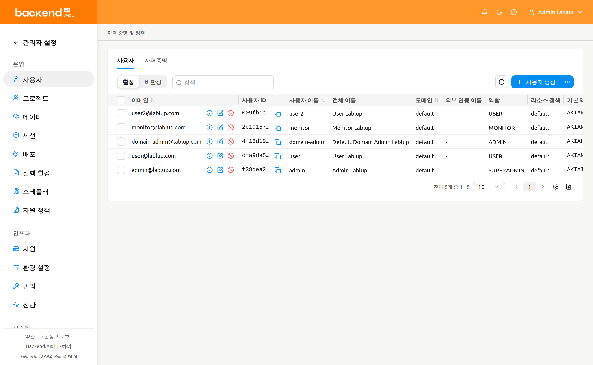
사용자 목록 조회 및 관리#
사용자는 + 사용자 추가 버튼을 클릭하여 생성할 수 있습니다. 이 때 비밀번호는 8자 이상, 알파벳/특수문자/숫자를 각각 1개 이상 포함해야 합니다. 사용자 이름과 성명 필드에는 각각 최대 64자까지 입력할 수 있습니다.
이미 같은 이메일이나 사용자 이름이 있는 사용자가 존재한다면 사용자를 생성할 수 없습니다. 다른 이메일과 사용자 이름을 사용해 보십시오.
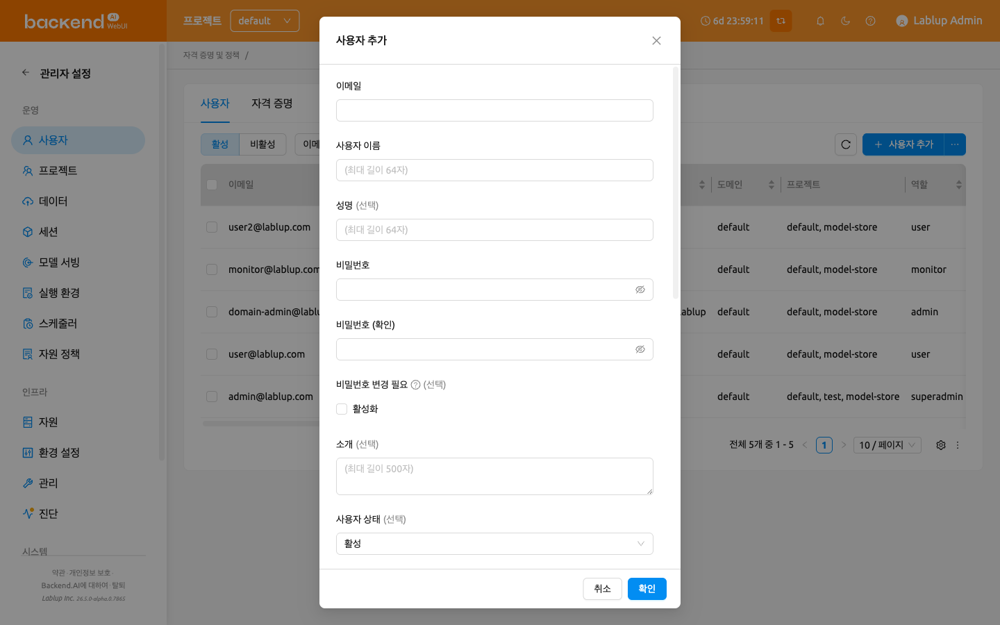
사용자가 생성되었는지 확인합니다.
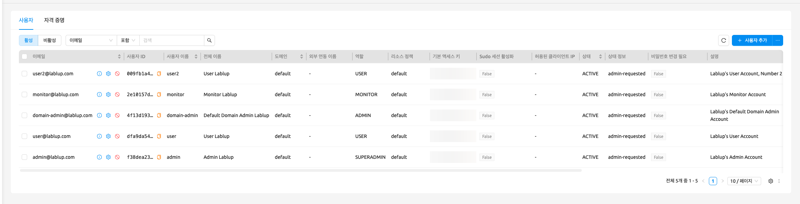
해당 사용자의 이메일 컬럼 행에 있는 정보 아이콘을 클릭하면 더 자세한 사용자 정보를 확인할 수 있습니다. 사용자가 속한 도메인과 프로젝트 정보도 확인할 수 있습니다.
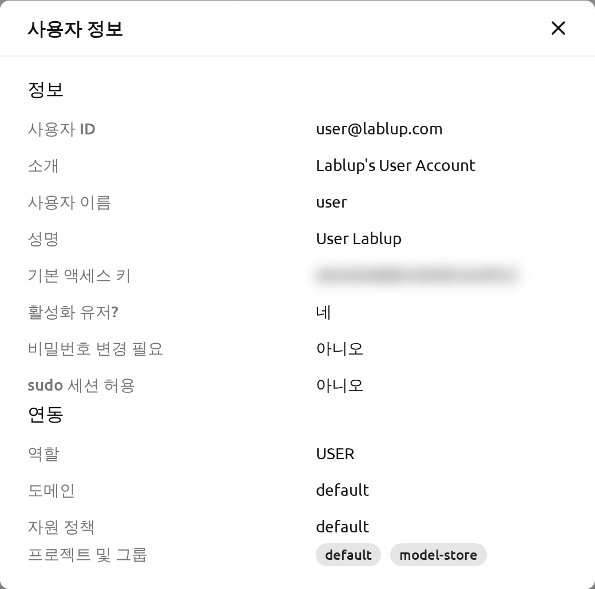
해당 사용자의 이메일 컬럼 행에 있는 수정(연필) 아이콘을 클릭하면 이미 존재하는 사용자의 설정을 변경할 수 있습니다. 사용자의 이름, 비밀번호, 활성화 상태 등을 변경할 수 있습니다. 사용자 ID(이메일)는 변경할 수 없습니다. 변경 내용을 적용하려면 저장을 클릭합니다.
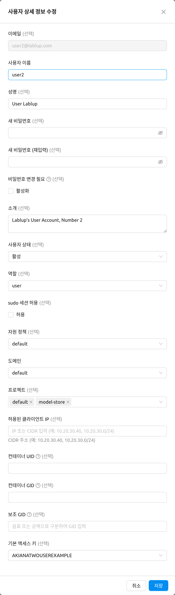
사용자 생성/수정 대화 상자에는 다음과 같은 필드가 포함되어 있습니다.
이메일: 사용자의 이메일 주소로, 로그인 ID로 사용됩니다. 생성 후에는 변경할 수 없습니다.
사용자 이름: 사용자의 고유 식별자입니다 (최대 64자).
성명: 사용자의 표시 이름입니다 (최대 64자).
비밀번호: 8자 이상이어야 하며, 알파벳, 특수문자, 숫자를 각각 1개 이상 포함해야 합니다.
비밀번호 변경 필요: 관리자가 사용자를 일괄 생성할 때 무작위 비밀번호를 선택한 경우, 이 필드를 ON으로 설정하여 비밀번호 변경이 필요함을 나타낼 수 있습니다. 사용자에게 비밀번호를 업데이트하라고 알리는 상단 바가 표시되지만, 이는 일종의 설명용 플래그로 실제 사용에는 영향을 미치지 않습니다.
설명: 사용자에 대한 선택적 설명입니다 (최대 500자).
사용자 상태: 사용자의 상태를 나타냅니다. 비활성 사용자는 로그인할 수 없습니다. 검증 필요는 이메일 인증이나 관리자의 승인과 같은 추가 단계를 거쳐야 계정을 활성화할 수 있는 상태를 나타냅니다. 비활성 사용자는 비활성 탭에 별도로 표시됩니다.
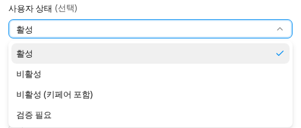
그림 24.6 역할: 사용자의 역할 (user, admin, superadmin). 현재 사용자의 권한에 따라 선택 가능한 옵션이 달라집니다.
sudo 세션 허용: 사용자가 연산 세션에서 sudo를 사용할 수 있도록 허용합니다. 이는 사용자가 root 권한이 필요한 패키지를 설치하거나 명령을 실행해야 할 때 유용합니다. 그러나 보안 문제를 일으킬 수 있으므로 모든 사용자에게 이 옵션을 활성화하는 것은 권장되지 않습니다.
이중 인증 사용: 사용자가 2단계 인증을 사용하는지 여부를 나타내는 플래그입니다. 2단계 인증을 사용하는 경우, 사용자는 로그인 시 추가로 OTP 코드를 입력해야 합니다. 관리자는 다른 사용자의 2단계 인증만 비활성화할 수 있습니다.
자원 정책: 사용자가 속한 사용자 자원 정책을 선택할 수 있습니다. 사용자 자원 정책에 대한 자세한 내용은 사용자 자원 정책 섹션을 참고하세요.
도메인: 사용자가 속한 도메인입니다. 이 필드는 사용자 생성 화면과 수정 화면 모두에 표시됩니다.
프로젝트: 사용자가 속할 프로젝트를 하나 이상 선택합니다. 선택한 도메인에 따라 사용 가능한 프로젝트가 달라집니다.
허용된 클라이언트 IP: 이 사용자 계정으로 시스템에 접근할 수 있는 IP 주소를 제한합니다. IP 주소 또는 CIDR 표기법으로 입력합니다 (예:
10.20.30.40,10.20.30.0/24). 비워두면 모든 IP에서 접근이 허용됩니다.컨테이너 UID: 컨테이너 내부 프로세스에 할당되는 숫자 사용자 ID입니다. 파일 권한 목적으로 컨테이너가 특정 UID와 일치해야 할 때 유용합니다.
컨테이너 GID: 컨테이너 내부 프로세스에 할당되는 기본 숫자 그룹 ID입니다.
보조 GID: 컨테이너 프로세스에 할당되는 추가 숫자 그룹 ID입니다. 여러 GID를 쉼표로 구분하여 입력합니다.
기본 액세스 키: (수정 시에만 사용 가능) 사용자의 키페어 중 API 인증에 사용될 기본 액세스 키를 선택합니다.
사용자 목록에서 값이 여러 개인 컬럼(허용된 클라이언트 IP, 보조 GID)은 첫 번째 값만 그대로 표시하고
나머지는 +N 태그로 접어 둡니다. 태그 위에 마우스를 올리면 컬럼 너비를 넓히지 않고도 전체 목록을 확인할 수
있습니다.
사용자 일괄 생성#
여러 사용자 계정을 한 번에 생성해야 할 때 사용자 일괄 생성 기능을 사용할 수 있습니다.
사용자 페이지의 사용자 추가 버튼 옆에 말줄임표(...)
드롭다운 버튼이 표시됩니다. 이 드롭다운 버튼을 클릭하고 사용자 일괄 생성을
선택하면 일괄 생성 대화 상자가 열립니다.
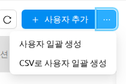
일괄 생성 대화 상자에는 다음 필드가 포함되어 있습니다. 대화 상자 상단의 안내 배너에 접두사 뒤에 zero-padded 순번이 붙어 이메일과 사용자명이 자동 생성된다는 설명이 표시됩니다.
- 이메일 접두사 (@ 앞): 자동 생성되는 이메일 주소의 접두사 부분입니다. 문자, 숫자, 점, 하이픈, 밑줄만 사용할 수 있습니다 (최대 30자).
- 이메일 접미사 (@ 뒤): 자동 생성되는 이메일 주소의 도메인 부분입니다.
이 필드에는
@접두사가 자동으로 표시됩니다 (최대 30자). - 생성할 사용자 수: 생성할 사용자 계정 수입니다 (1~100). 이 필드 하단에 생성될
이메일 주소의 실시간 미리보기가 표시됩니다. 4명 이하일 경우 모든 이메일이 표시되고,
5명 이상일 경우 처음 2개, 줄임표, 마지막 이메일이 표시됩니다 (예:
student01@example.com, student02@example.com ... student10@example.com). - 비밀번호: 생성되는 모든 사용자의 공유 초기 비밀번호입니다. 단일 사용자 생성과 동일한 비밀번호 규칙이 적용됩니다 (8자 이상, 알파벳/특수문자/숫자 각 1개 이상 포함).
- 비밀번호 변경 필요: 일괄 생성 시 기본값이 ON으로 설정됩니다. 활성화하면 각 사용자가 첫 로그인 시 비밀번호를 변경하라는 안내를 받게 됩니다.
- 상태, 역할, sudo 세션 허용, 자원 정책, 도메인, 프로젝트, 허용된 클라이언트 IP 등 나머지 필드는 단일 사용자 생성과 동일합니다. 사용자 목록 조회 및 관리 섹션을 참고하세요.
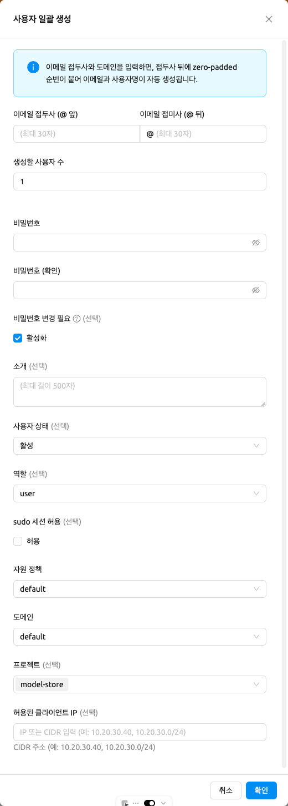
사용자 이름과 이메일 주소는 입력한 접두사와 접미사를 기반으로 자동 생성됩니다.
예를 들어, 이메일 접두사를 student, 이메일 접미사를 example.com, 생성할 사용자
수를 10으로 설정하면 다음과 같은 계정이 생성됩니다:
| 사용자 이름 | 이메일 |
|---|---|
student01 |
student01@example.com |
student02 |
student02@example.com |
| ... | ... |
student10 |
student10@example.com |
순번은 총 사용자 수에 따라 zero-padding이 적용됩니다. 예를 들어, 3명이면
student1 부터 student3, 10명이면 student01 부터 student10, 100명이면
student001 부터 student100이 됩니다.
생성하려는 사용자 이름이나 이메일 주소 중 일부가 이미 존재하는 경우, 작업이 부분적으로 성공할 수 있습니다. 생성된 사용자 수와 실패한 사용자 수가 메시지로 표시되며, 생성하지 못한 사용자와 그 사유가 실패 목록에 표시됩니다.
CSV 파일로 사용자 일괄 생성#
사용자를 직접 일괄 생성하는 대신, CSV 파일을 업로드하여 사용자를 생성할 수도 있습니다. 사용자 추가 버튼 옆의 말줄임표(...) 드롭다운을 클릭하고 CSV 파일로 사용자 일괄 생성을 선택하면 CSV 업로드 대화 상자가 열립니다.
CSV 파일 준비#
CSV 파일은 UTF-8 인코딩을 사용해야 합니다. 첫 번째 행은 헤더 행이어야 합니다. 헤더 이름은 대소문자를 구분하지 않고 일치시킵니다. 대화 상자 내의 CSV 템플릿 다운로드 버튼을 클릭하면 바로 사용할 수 있는 템플릿을 다운로드할 수 있습니다.
필수 컬럼:
- email: 사용자의 이메일 주소로, 로그인 ID로 사용됩니다.
- username: 사용자의 고유 사용자 이름입니다.
이 두 컬럼 중 하나라도 없는 파일은 업로드가 거부되며, 어떤 컬럼이 없는지 대화 상자에 표시됩니다.
선택 컬럼:
- password: 초기 비밀번호입니다. 단일 사용자 생성과 동일한 비밀번호 규칙이 적용됩니다 (8자 이상, 알파벳/특수문자/숫자 각 1개 이상 포함). 모든 계정에는 비밀번호가 필요하지만, 반드시 파일에서 가져올 필요는 없습니다. 아래 안내를 참고하세요.
- full_name: 사용자의 표시 이름입니다.
- role: 사용자의 역할입니다 (
user,admin,superadmin). 생략하면 기본값user가 사용됩니다. - status: 사용자의 초기 상태입니다 (
active또는inactive). 생략하면 기본값active가 사용됩니다. - domain_name: 사용자를 할당할 도메인입니다. 생략하면 현재 도메인이 기본값으로 사용됩니다.
- description: 사용자에 대한 선택적 설명입니다.
- need_password_change: 사용자가 첫 로그인 시 비밀번호를 변경해야 하는지 여부입니다 (
true또는false). 생략하면 기본값true가 사용됩니다. - resource_policy: 할당할 자원 정책의 이름입니다.
- project: 사용자를 추가할 프로젝트의 이름입니다.
업로드 및 검토#
대화 상자 왼쪽에는 기본값 패널이 있습니다. 여기에서 지정한 값은 해당 항목이 비어 있는 모든 행에 채워지므로
CSV의 모든 셀에 같은 값을 반복해서 입력할 필요가 없습니다. 패널에서는 도메인, 프로젝트,
사용자 자원 정책, 비밀번호, 비밀번호 변경 필요, 설명을 지정할 수 있으며, 지정하지 않은 항목에는
기본값 없음이 표시됩니다.
CSV 파일을 선택하면 대화 상자에 다음 표시와 함께 모든 행을 나열하는 미리보기 테이블이 표시됩니다.
- 유효한 데이터가 있는 행은 정상적으로 표시됩니다.
- 형식 오류나 유효성 검사 오류가 있는 행은 인라인 오류 메시지와 함께 강조 표시되므로, 재시도 전에 소스 파일을 수정할 수 있습니다.
- 미리보기 상단의 요약에는 유효한 행과 유효하지 않은 행의 총 수가 표시됩니다.
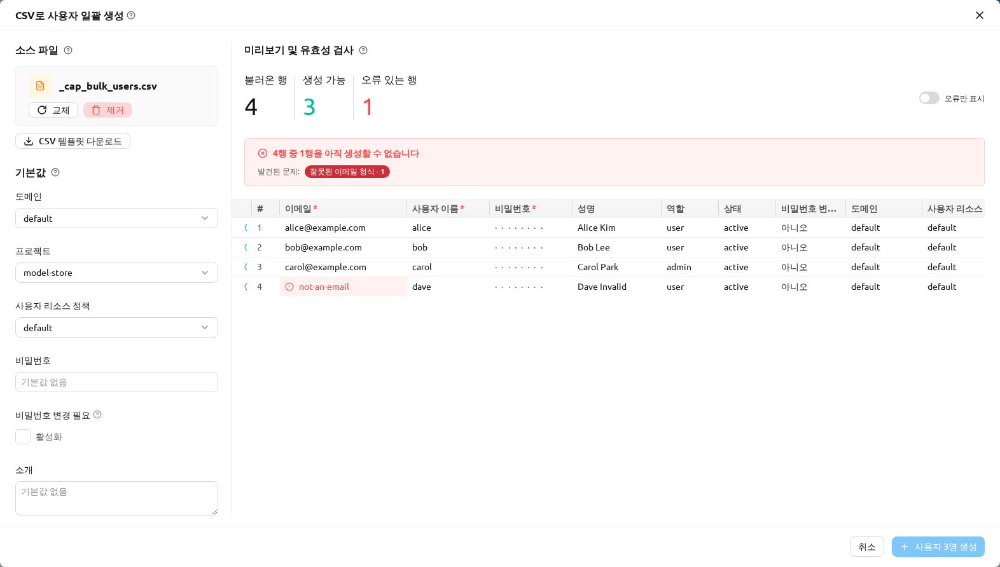
password 컬럼이 없는 CSV(예: 사용자 목록에서 내보낸 파일)도 정상적으로 불러올 수 있습니다. 기본값
패널에 비밀번호를 입력하면 미리보기 내용이 바로 갱신되므로, 파일을 다시 업로드할 필요가 없습니다.
사용자 생성#
미리보기를 검토하고 모든 행이 유효한지 확인한 후 N명의 사용자 생성을 클릭하여 제출합니다. 일부 행이 서버 측에서 실패한 경우(예: 이메일이나 사용자 이름이 이미 존재하는 경우) 대화 상자가 열린 상태로 유지되며 행별 오류가 표시되어 충돌을 식별하고 해결할 수 있습니다.
일부 행만 성공한 경우 N명의 사용자가 생성되었습니다. M명의 사용자 생성에 실패했습니다.라는 메시지가 표시되고, 대화 상자 위에 실패 목록이 열려 생성하지 못한 사용자의 이메일, 사용자 이름, 반환된 오류가 표시됩니다. 일부 계정이 생성된 경우에는 생성된 키페어 목록이 먼저 표시되며, 이를 닫으면 실패 목록이 이어서 표시됩니다. 이미 생성된 계정은 그대로 유지되므로, 보고된 행만 수정하면 됩니다.
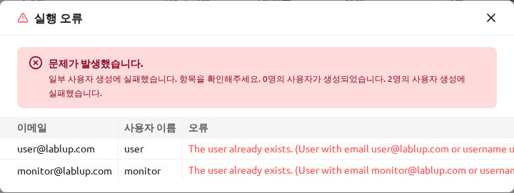
일부 행이 실패한 경우 성공한 행만 새 계정이 생성됩니다. 실패한 행은 개별적으로 보고됩니다. 소스 CSV를 수정하고 다시 업로드하여 나머지 계정을 생성하십시오.
사용자 일괄 수정#
여러 계정에 같은 변경을 적용해야 할 때 — 다른 도메인이나 프로젝트로 옮기거나, 자원 정책을 바꾸거나, 컨테이너 UID/GID를 설정할 때 — 계정을 하나씩 열지 않고 한 번에 수정할 수 있습니다.
- 사용자 목록에서 행 체크박스로 수정할 사용자를 선택합니다.
- 툴바에 선택 개수가 표시됩니다. 그 옆의 수정(연필) 버튼을 클릭합니다.
- 사용자 일괄 수정 대화 상자가 열립니다.
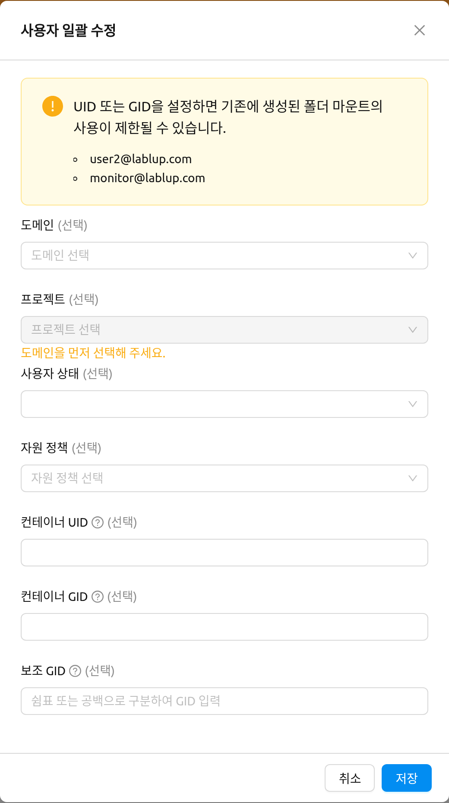
대화 상자 상단의 알림에는 변경이 적용될 모든 사용자의 이메일 주소가 나열되므로, 실행 전에 선택 내용을 확인할 수 있습니다. 또한 UID 또는 GID를 설정하면 기존에 생성된 폴더 마운트의 사용이 제한될 수 있다는 경고도 함께 표시됩니다.
대화 상자에는 다음 필드가 있습니다. 건드리지 않은 필드는 선택한 어떤 사용자에서도 변경되지 않습니다.
- 도메인: 선택한 사용자를 다른 도메인으로 옮깁니다. 도메인을 바꾸면 프로젝트 선택이 초기화됩니다.
- 프로젝트: 선택한 사용자를 하나 이상의 프로젝트에 배정합니다. 도메인을 먼저 선택해야 합니다.
- 사용자 상태: 계정을 활성, 비활성, 비활성 (키페어 포함), 검증 필요 중 하나로 설정합니다.
- 자원 정책: 선택한 모든 계정에 사용자 자원 정책을 적용합니다.
- 컨테이너 UID, 컨테이너 GID, 보조 GID: 컨테이너 내부 프로세스에 할당되는 숫자 ID를 설정합니다.
작업이 끝나면 선택한 사용자 중 몇 명이 수정되었는지 메시지로 알려 줍니다. 변경하지 못한 계정은 개별 오류로 보고됩니다.
사용자 계정 비활성화#
사용자별 사용 통계 추적, 메트릭 보존, 실수로 인한 계정 손실 방지를 위해, 사용자가 로그인하지 못하도록 하는 권장 방법은 계정을 삭제하는 것이 아니라 비활성화하는 것입니다. 비활성화는 사용자의 레코드를 그대로 유지하면서 로그인만 차단합니다. 사용자를 비활성화하려면 해당 사용자의 이메일 컬럼 행에 있는 비활성화 아이콘을 클릭합니다. 확인 팝오버가 나타나면 비활성화 버튼을 클릭하여 사용자를 비활성화합니다.
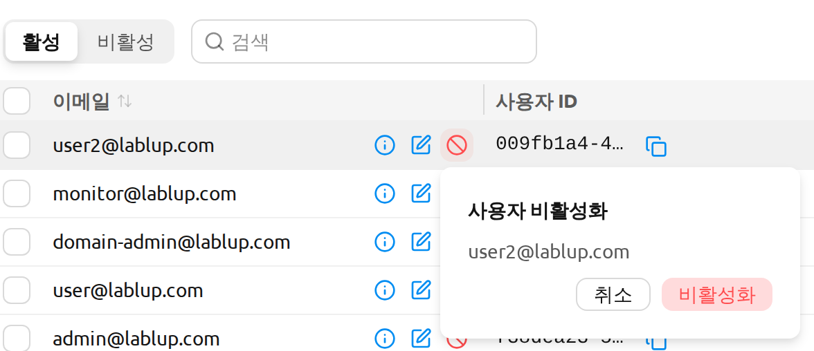
사용자를 다시 활성화하려면 사용자 페이지의 비활성 탭으로 이동한 뒤, 해당 사용자의 이메일 컬럼 행에 있는 복원(재활성화) 아이콘을 클릭합니다. 확인 팝오버가 나타나면 활성화 버튼을 클릭하여 사용자를 다시 활성화합니다.
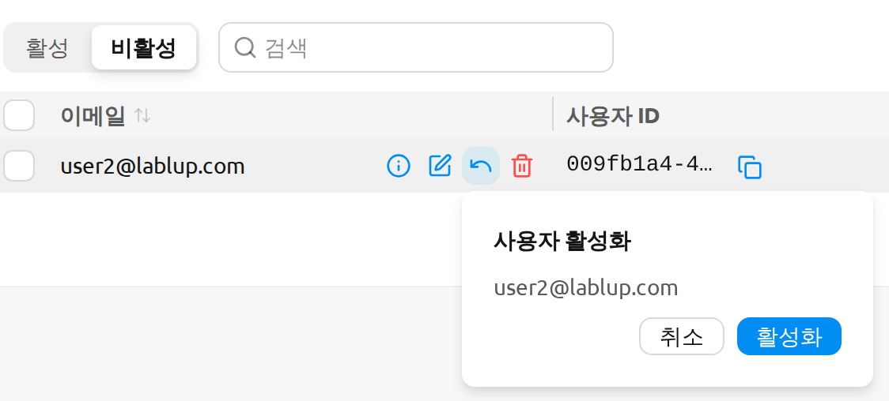
사용자를 비활성화하거나 다시 활성화해도 사용자의 자격 증명은 변경되지 않습니다. 사용자 계정에는 여러 키페어가 있을 수 있으므로 어떤 자격 증명을 다시 활성화해야 할지 결정하기 어렵기 때문입니다.
일상적인 계정 관리는 비활성화에 의존하지만, 슈퍼 관리자는 아래에서 설명하는 영구 삭제(Purge) 기능을 사용하여 이미 비활성화된 계정을 영구적으로 제거할 수 있습니다.
비활성 사용자 영구 삭제#
슈퍼 관리자는 이미 비활성화된 사용자 계정을 영구적으로 삭제(purge)할 수 있습니다. 영구 삭제는 비활성 탭에 있는 사용자에 대해서만 가능하며, 활성 사용자는 먼저 비활성화해야 합니다. 비활성화와 달리 영구 삭제는 되돌릴 수 없으며 사용자의 관련 데이터도 함께 제거합니다.
사용자 페이지에서 비활성 탭으로 전환합니다(상태 선택기에는 영구 삭제가 사용자의 키페어에도 영향을 준다는 것을 나타내기 위해 비활성 (키페어 포함) 으로 표시됩니다). 두 가지 방법으로 사용자를 영구 삭제할 수 있습니다.
- 개별 영구 삭제: 비활성 사용자 한 명의 이메일 컬럼 행에서 휴지통(영구 삭제) 아이콘을 클릭합니다.
- 일괄 영구 삭제: 행 체크박스로 하나 이상의 비활성 사용자를 선택한 다음, 선택 개수 옆에 나타나는 유저 영구 삭제 버튼(휴지통 버튼)을 클릭합니다.
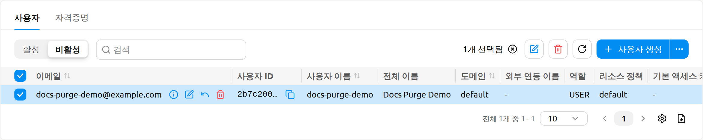
두 작업 모두 유저 영구 삭제 확인 모달을 엽니다. 이 작업은 되돌릴 수 없으므로, 삭제 버튼이 활성화되기 전에 모달에 표시된 확인 문구를 입력해야 합니다. 또한 모달에는 다음 두 가지 옵션이 있습니다.
- 공유된 가상 폴더도 함께 삭제하시겠습니까?: 선택하면 영구 삭제되는 사용자가 공유한 가상 폴더도 함께 삭제됩니다. 선택하지 않으면 해당 폴더는 그대로 유지됩니다.
- 생성된 배포도 함께 삭제하시겠습니까?: 선택하면 영구 삭제되는 사용자가 생성한 배포도 함께 삭제됩니다. 선택하지 않으면 해당 배포는 삭제되지 않고 소유권이 위임됩니다.
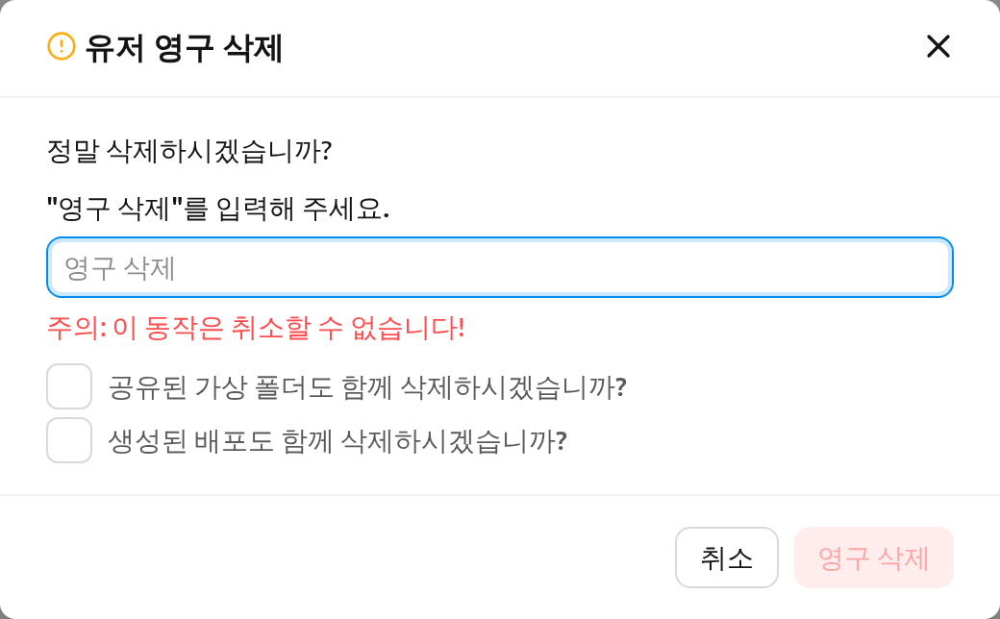
사용자 영구 삭제는 되돌릴 수 없습니다. 사용자의 가상 폴더, 커널 기록 및 관련 키페어도 함께 삭제됩니다. 확인하기 전에 올바른 사용자를 선택했는지 반드시 확인하세요.
사용자의 키페어 관리#
각 사용자 계정은 일반적으로 하나 이상의 키페어를 가지고 있습니다. 키페어는 사용자가 로그인한 후 Backend.AI 서버에 대한 API 인증에 사용됩니다. 로그인은 사용자 이메일과 비밀번호를 통한 인증이 필요하지만, 사용자가 서버에 보내는 모든 요청은 키페어를 기반으로 인증됩니다.
사용자는 여러 개의 키페어를 가질 수 있지만, 키페어 관리에 대한 사용자의 부담을 줄이기 위해 현재는 사용자의 키페어 중 하나만 사용하여 요청을 보냅니다. 또한 새 사용자를 생성하면 키페어가 자동으로 생성되므로 대부분의 경우 수동으로 키페어를 생성하고 할당할 필요가 없습니다.
키페어는 사용자 페이지의 자격 증명 탭에서 확인할 수 있습니다. 활성 키페어는 즉시 표시되며, 비활성 키페어를 보려면 표 위의 비활성 버튼을 클릭합니다.
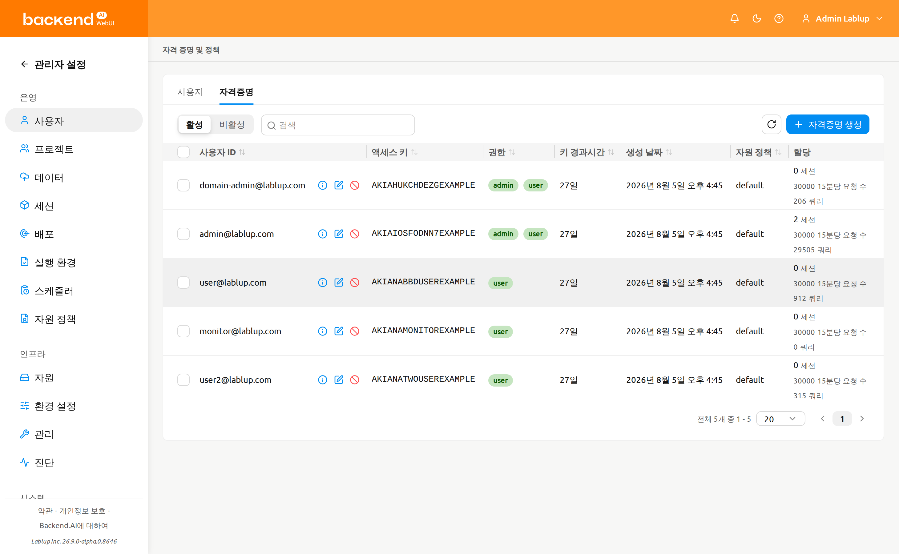
사용자 탭과 마찬가지로 키페어 행에 있는 인라인 버튼을 사용하여 키페어 세부 정보를 보거나 수정할 수 있습니다. 정보 아이콘 버튼을 클릭하면 키페어의 구체적인 세부 정보를 확인할 수 있습니다. 필요한 경우 복사 버튼을 클릭하여 secret key를 복사할 수 있습니다.
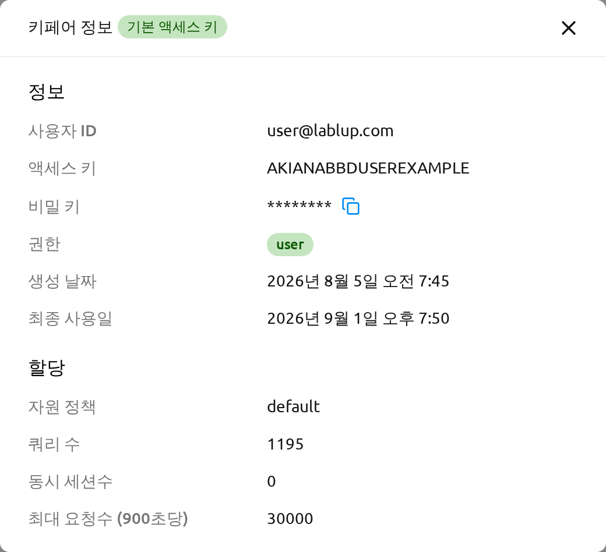
키페어 행의 수정(연필) 버튼을 클릭하면 키페어의 자원 정책과 최대 요청수를 변경할 수 있습니다. 대화 상자의 제목은 키페어 자원 정책 수정이며, 저장을 클릭하면 변경 내용이 적용됩니다. 최대 요청수 값이 작으면 로그인과 같은 API 작업이 차단될 수 있으므로 주의하시기 바랍니다.
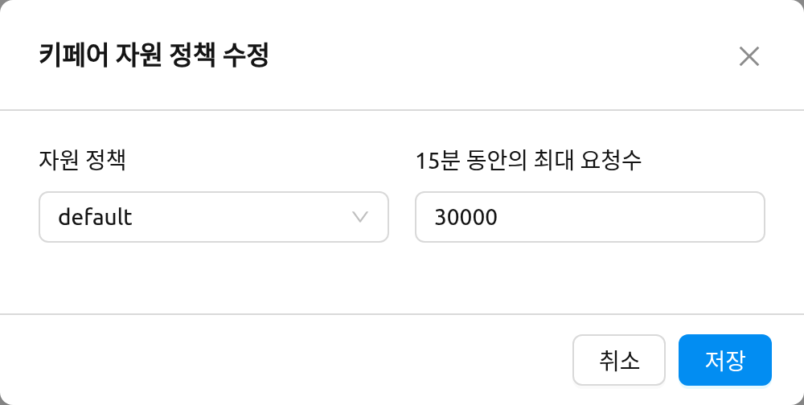
키페어 행의 비활성화 버튼이나 활성화 버튼을 클릭하여 키페어를 비활성화하거나 다시 활성화할 수도 있습니다. 사용자 탭과 달리 비활성 탭에서는 키페어를 영구적으로 삭제할 수 있습니다. 그러나 현재 사용자의 주요 액세스 키로 사용 중인 키페어는 영구적으로 삭제할 수 없습니다.
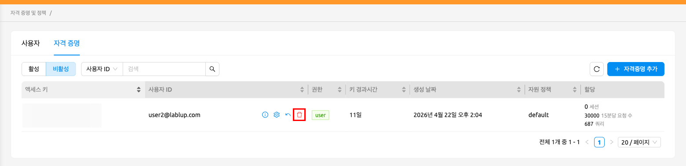
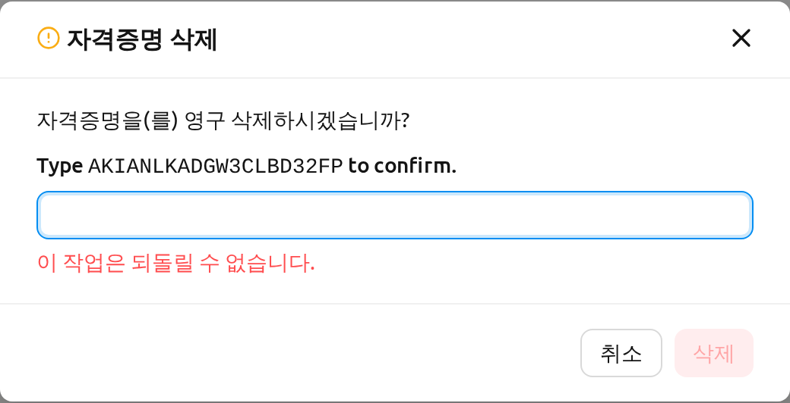
여러 자격 증명을 한 번에 활성화 또는 비활성화#
행을 하나씩 처리하는 대신 여러 키페어의 상태를 한 번에 변경할 수 있습니다.
- 행 체크박스로 키페어를 선택합니다.
- 툴바에 선택 개수가 표시되고 그 옆에 상태 변경 버튼이 나타납니다. 활성 탭에서는 비활성화, 비활성 탭에서는 활성화 버튼입니다.
- 버튼을 클릭합니다. 확인 대화 상자에 대상 자격 증명 개수와 변경이 소유자에게 미치는 영향이 표시됩니다.
- 확인하면 변경이 적용됩니다.
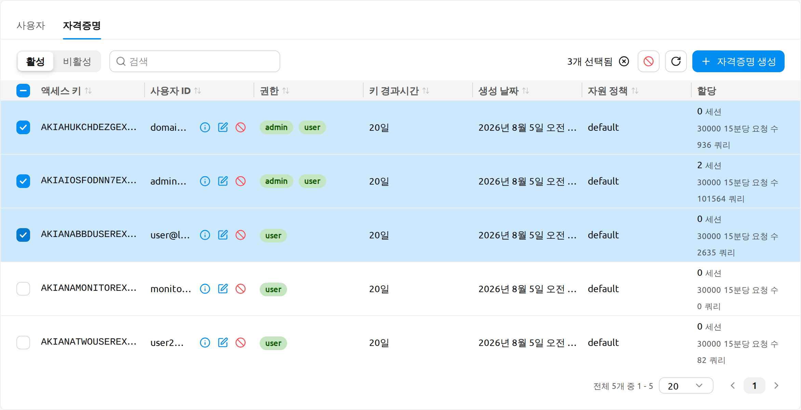
일부만 성공한 경우 결과 메시지에 변경된 자격 증명 수와 실패한 자격 증명 수가 함께 표시됩니다. 탭을 전환하거나 필터를 변경하거나 테이블을 정렬하거나 다른 페이지로 이동하면 선택이 해제됩니다.
자격증명 생성#
실수로 키페어를 삭제한 경우, 오른쪽 상단의 자격증명 생성 버튼을 클릭하여 사용자를 위한 키페어를 새로 만들 수 있습니다.
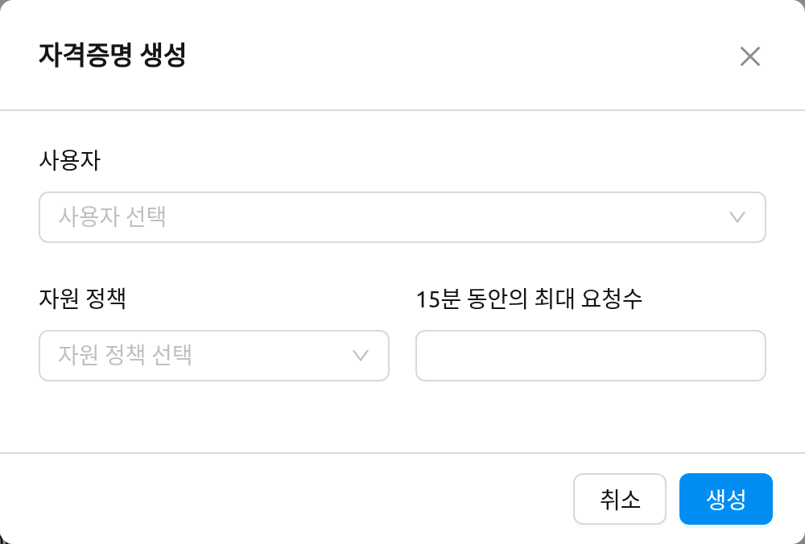
대화 상자에는 다음 필드가 있습니다.
사용자: 기존 사용자 계정을 검색할 수 있는 선택 목록입니다. 입력을 시작하면 목록이 좁혀지며, 새 키페어를 소유할 계정을 선택합니다. 목록에서 계정을 고르기 때문에 실제로 존재하지 않는 주소를 제출할 수 없습니다.
자원 정책: 새 키페어에 적용할 키페어 자원 정책입니다.
최대 요청수 (15분당): 15분 동안 Backend.AI 서버에 보낼 수 있는 최대 요청 수입니다. 예를 들어 1000으로 설정하면 키페어가 15분 동안 1000개가 넘는 API 요청을 보낼 경우 서버에서 오류를 발생시키고 요청을 수락하지 않습니다. 기본값을 사용하고 사용자의 패턴에 따라 API 요청 빈도가 높아지면 값을 증가시키는 것이 좋습니다.
허용되는 최댓값은 50000입니다. 더 큰 값을 입력하면
최대 요청수 값은 0보다 크고 50000 이하여야 합니다.라는 검증 메시지가 표시되고 제출이 차단되므로, 입력한 값이 소리 없이 줄어들지 않습니다. 100 이하의 값은 입력할 수 있지만, 최대 요청수가 작으면 로그인 등의 작업이 차단될 수 있으므로 경고가 표시됩니다.
프로젝트 구성원과 프로젝트 스토리지 폴더 공유#
Backend.AI는 사용자 자신의 스토리지 폴더 외에도 프로젝트를 위한 스토리지 폴더를 제공합니다. 프로젝트 스토리지 폴더는 특정 사용자가 아닌 특정 프로젝트에 속하는 폴더로, 해당 프로젝트의 모든 사용자가 액세스할 수 있습니다.
프로젝트 폴더는 관리자만 생성할 수 있습니다. 일반 사용자는 관리자가 생성한 프로젝트 폴더의 내용에만 액세스할 수 있습니다. 시스템 설정에 따라 프로젝트 폴더가 허용되지 않을 수 있습니다.
먼저 관리자 계정으로 로그인하여 프로젝트 폴더를 생성합니다. 데이터 페이지로 이동한 후 폴더 생성을 클릭하여 폴더 생성 대화 상자를 엽니다. 폴더 이름을 입력하고 종류를 프로젝트로 설정합니다. 종류를 프로젝트로 설정하면 헤더의 프로젝트 선택기에서 선택한 프로젝트에 자동으로 할당됩니다. 권한은 읽기 전용으로 설정합니다.
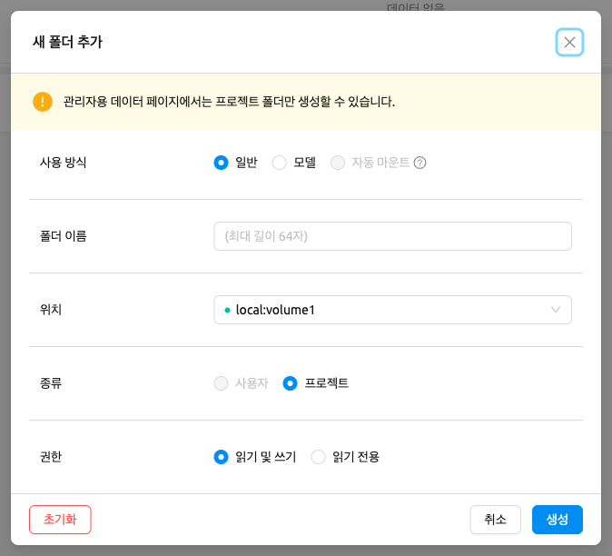
폴더가 생성되었는지 확인한 후 사용자 B의 계정으로 로그인하여 데이터 페이지에 방금 생성한 프로젝트 폴더가 별도의 초대 절차 없이 표시되는지 확인합니다. 마운트 권한 패널에도 읽기 전용 (R)이 표시되는 것을 확인할 수 있습니다.
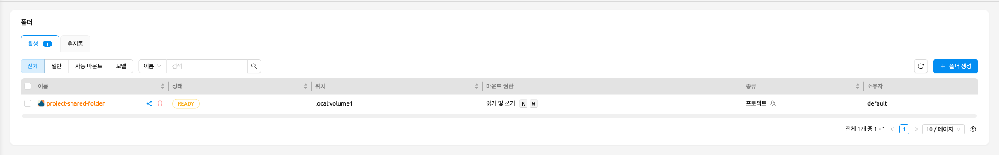
모델 배포#
관리자 배포 페이지#
관리자 및 슈퍼 관리자는 클러스터에 있는 모든 배포를 한눈에 볼 수 있는 관리자 배포 페이지(/admin/deployments)에 접근할 수 있습니다. 프로젝트 열은 배포 목록에서 제공되지만 기본적으로 숨겨져 있으며, 컬럼 설정에서 표시하도록 활성화할 수 있습니다.
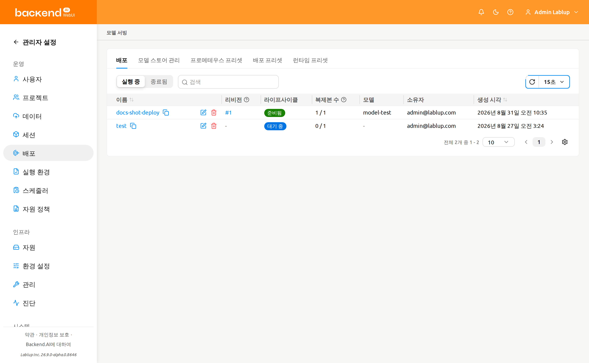
관리자 배포 페이지에는 최대 네 개의 탭이 있습니다:
- 배포: 모든 프로젝트의 배포 목록을 표시하며, 사용자용 배포 페이지와 동일한 라이프사이클 및 속성 필터를 제공합니다.
- 모델 스토어 관리: 아래 관리자 모델 스토어 관리 섹션을 참고하세요.
- 프로메테우스 프리셋: 관리자가 재사용 가능한 프로메테우스 쿼리 프리셋을 관리할 수 있는 탭입니다. 자세한 내용은 아래 프로메테우스 쿼리 프리셋 섹션을 참고하세요.
- 배포 프리셋: 관리자가 최종 사용자에게 배포 시 적용할 수 있도록 재사용 가능한 배포 프리셋을 관리할 수 있는 탭입니다. 자세한 내용은 아래 배포 프리셋 섹션을 참고하세요.
각 관리자용 배포는 관리자 배포 페이지 아래의 주소 /admin/deployments/<배포 ID>를 갖습니다. 관리자 배포 페이지에서 배포를 열면 URL이 이 경로로 변경되어 배포 상세 페이지를 직접 링크하거나 북마크할 수 있습니다.
배포 상세 페이지의 리비전 카드#
배포를 열면 배포 상세 페이지의 리비전(Revisions) 카드에서 다음 세 개의 탭을 사용할 수 있습니다.
- 현재 리비전(Current Revision): 현재 적용된 리비전의 설정을 보여줍니다. 이미지, 자원, 클러스터 구성과 함께 런타임 파라미터(Runtime Parameters) 행이 표시되어 해당 리비전에 구성된 런타임 파라미터 값을 확인할 수 있습니다.
- 리비전 히스토리(Revision History): 이 배포에 적용되었던 과거 리비전 목록을 보여줍니다. 행을 클릭하면 해당 리비전의 전체 구성을 보여주는 상세 보기가 열리며, 여기에도 vLLM/SGLang 리비전의 경우 런타임 파라미터 행이 표시됩니다.
- 감사 로그(Audit Log): 배포에 대해 수행된 작업 기록을 보여줍니다.
감사 로그 탭은 배포에 대한 모든 작업 이력을 추적하며, 각 항목에는 다음 정보가 포함됩니다.
- 시간(Time): 작업이 수행된 타임스탬프입니다.
- 작업(Operation): 수행된 작업의 유형입니다.
- 상태(Status): 작업의 결과 상태입니다.
- 설명(Description): 작업에 대한 추가 세부 정보입니다.
- 소요 시간(Duration): 작업이 완료되기까지 걸린 시간입니다.
- 실행자(Triggered By): 작업을 실행한 사용자입니다.
상태(Status), 작업(Operation), 실행자(Triggered By), 시간(Time) 날짜 범위 필터로 항목을 좁힐 수 있습니다.
관리자 모델 스토어 관리#
슈퍼 관리자는 관리자 배포 페이지의 모델 스토어 관리(Model Store Management) 탭을 통해 모델 카드를 관리할 수 있습니다.
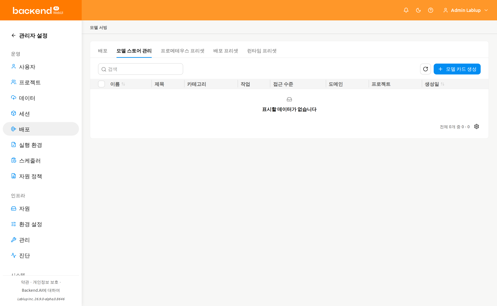
목록은 다음 컬럼을 제공합니다:
- 이름(Name): 모델 카드의 고유 식별자입니다.
- 제목(Title): 사람이 읽을 수 있는 표시 이름입니다.
- 카테고리(Category): 모델 카테고리입니다 (예: LLM).
- 태스크(Task): 추론 태스크 유형입니다 (예: text-generation).
- 접근 수준(Access Level): 모델 카드가 공개적으로 접근 가능한 경우 녹색
Public태그가 표시되고, 그렇지 않으면 기본Private태그가 표시됩니다. - 도메인(Domain): 모델 카드를 소유한 도메인입니다.
- 프로젝트(Project): 모델 카드를 소유한 프로젝트입니다.
- 생성 시간(Created At): 모델 카드가 생성된 시간입니다.
상단의 속성 필터 바에서 다음 속성으로 목록을 좁힐 수 있습니다.
- 이름(Name): 모델 카드 이름으로 검색합니다(텍스트 일치).
- 도메인(Domain): 소유 도메인으로 검색합니다(텍스트 일치).
- 프로젝트(Project): 소유 프로젝트의 UUID로 검색합니다. 값은 필터를 적용하기 전에 검사되므로, 형식이 올바르지 않은 식별자는 빈 목록 대신 오류 메시지로 안내됩니다.
- 스토리지 호스트(Storage Host): 연결된 폴더의 스토리지 호스트로 검색합니다. 값을 직접 입력하는 대신 이 클러스터에 등록된 호스트 목록에서 선택하며, 같음(equals)과 같지 않음(not equals) 연산자를 모두 사용할 수 있습니다.
각 행의 이름 셀에는 편집 및 삭제 액션 아이콘이 직접 표시됩니다.
여러 모델 카드를 한 번에 삭제하려면 체크박스로 삭제할 행을 선택한 후 선택 개수 옆의 빨간색 휴지통 버튼을 클릭합니다. 카드가 삭제되기 전에 확인 대화 상자가 표시됩니다.
모델 카드 생성#
모델 카드 생성 버튼을 클릭하여 생성 모달을 엽니다. 다음 필드를 입력합니다:
이름(Name) (필수): 모델 카드의 고유 식별자입니다.
제목(Title): 사람이 읽을 수 있는 표시 이름입니다.
설명(Description): 모델에 대한 상세 설명입니다.
작가(Author): 모델 생성자 또는 조직입니다.
모델 버전(Model Version): 모델 버전입니다.
태스크(Task): 추론 태스크 유형입니다 (예: text-generation).
카테고리(Category): 모델 카테고리입니다 (예: LLM).
프레임워크(Framework): 사용된 ML 프레임워크입니다 (예: PyTorch, TensorFlow). 여러 값을 쉼표(,)로 구분하여 입력합니다.
레이블(Label): 분류 및 필터링을 위한 태그입니다. 여러 태그를 쉼표(,)로 구분하여 입력합니다.
라이선스(License): 모델이 배포되는 라이선스입니다.
아키텍처(Architecture): 모델 아키텍처입니다 (예: Transformer).
README: 모델에 대한 마크다운 README입니다.
도메인(Domain): 모델 카드를 연결할 도메인입니다. 현재 사용자의 도메인이 자동으로 미리 채워지며, 필요한 경우 변경할 수 있습니다.
프로젝트 ID(Project ID) (필수): 모델 카드를 소유하는 프로젝트입니다.
VFolder (필수): 모델 파일이 포함된 스토리지 폴더입니다.
접근 수준(Access Level): 사용자용 모델 스토어에서 모델 카드를 누가 볼 수 있는지를 제어합니다.
Internal: 모델 카드를 소유한 도메인과 프로젝트의 관리자에게만 표시됩니다. 일반 사용자는 모델 스토어에서 Internal 모델 카드를 볼 수 없습니다.Public: 해당 프로젝트에 접근 권한이 있는 모든 사용자에게 표시됩니다.
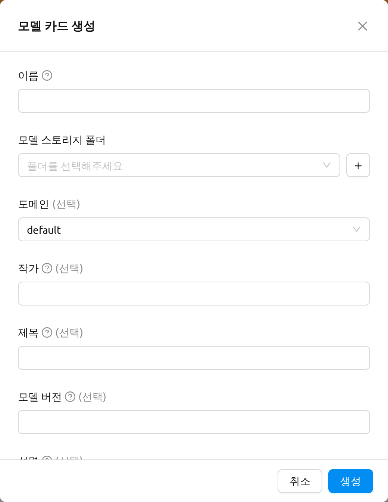
모델 카드 수정#
모델 카드 이름 옆의 편집 아이콘을 클릭하여 기존 모델 카드를 수정합니다. 이전에 입력한 필드가 채워진 상태로 편집 모달이 열립니다. 생성 시와 마찬가지로 레이블과 프레임워크 같은 다중 값 필드는 쉼표(,)로 구분하여 입력합니다.
모델 카드 삭제#
모델 카드 이름 옆의 삭제 아이콘을 클릭하여 개별 모델 카드를 삭제하거나, 행 체크박스로 여러 모델 카드를 선택한 후 선택 개수 옆의 빨간색 휴지통 버튼을 클릭하여 일괄 삭제를 수행할 수 있습니다.
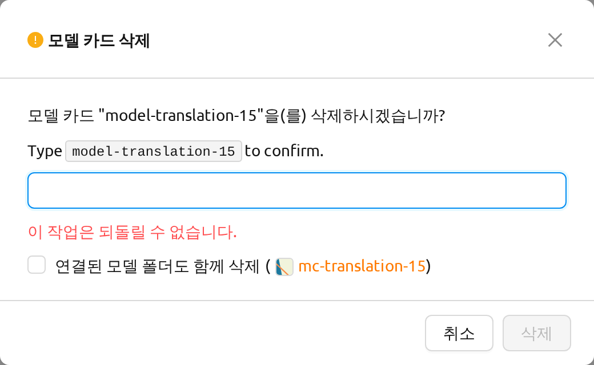
삭제 확인 대화 상자에는 연결된 모델 폴더도 함께 삭제 옵션이 포함되어 있습니다:
- 이 옵션을 체크하면, 모델 카드가 제거되는 동시에 해당 모델 카드와 연결된 스토리지 폴더(vfolder)가 휴지통으로 이동합니다. 휴지통 알림이 함께 표시되어 슈퍼 관리자는 연결된 폴더가 휴지통으로 이동했음을 확인할 수 있으며, 필요한 경우 데이터 > 휴지통에서 폴더를 복원할 수 있습니다. 연결된 폴더를 삭제하면 같은 폴더를 참조하는 다른 모든 모델 카드도 함께 삭제된다는 점에 유의하세요.
- 이 옵션을 체크하지 않으면, 모델 카드 레코드만 제거되며 연결된 스토리지 폴더는 그대로 유지되어 다른 모델 카드에 다시 사용할 수 있습니다.
일괄 삭제 시에도 동일하게 동작하며, 옵션을 체크하면 선택된 각 모델 카드와 연결된 스토리지 폴더가 휴지통으로 이동하고, 이동된 폴더마다 휴지통 알림이 표시됩니다.
프로메테우스 쿼리 프리셋#
Backend.AI는 관리자가 재사용 가능한 프로메테우스 쿼리 프리셋을 정의할 수 있게 해주며, 오토스케일링 규칙을 비롯한 모니터링 기능이 이를 이름으로 참조할 수 있습니다. 하나의 프리셋은 메트릭 이름, PromQL 쿼리 템플릿, 선택적인 시간 범위, 선택적인 필터 / 그룹 레이블을 함께 묶어 관리하므로, 운영자가 동일한 쿼리를 규칙마다 다시 입력할 필요가 없습니다.
이 프리셋은 관리자 배포 페이지의 프로메테우스 프리셋 탭(/admin/deployments?tab=prometheus-preset)에서 관리합니다.
슈퍼 관리자로 배포의 오토스케일링 규칙 편집기를 열고 메트릭 소스를 Prometheus로 설정한 뒤 프리셋을 선택하면, 프리셋 선택기 아래에 해당 프리셋의 현재 값(Current value) 이 실시간으로 표시됩니다. 이 미리보기는 슈퍼 관리자 계정에서만 제공되며, 일반 사용자 및 도메인 관리자에게는 표시되지 않습니다.
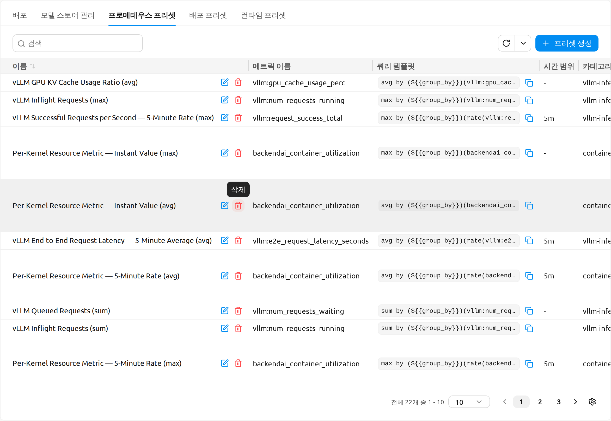
목록 및 필터#
프리셋 테이블에는 클러스터에 등록된 모든 프로메테우스 쿼리 프리셋이 표시됩니다. 각 행에는 다음 정보가 포함됩니다.
- 이름: 프리셋을 식별하기 위한 고유한 이름이며, 사람이 읽기 쉬운 형태입니다. 해당 셀에서는 수정 및 삭제 인라인 액션도 제공합니다.
- ID: 프리셋의 내부 식별자입니다.
- 메트릭 이름: 이 프리셋이 보고하는 메트릭으로, 오토스케일링 규칙 등 소비자 측에서 표시 라벨로 사용합니다.
- 쿼리 템플릿: 실행될 PromQL 표현식입니다. 셀은 복사 가능하며, 값 위에 마우스를 올린 뒤 복사 아이콘을 클릭하면 전체 템플릿을 클립보드로 복사할 수 있습니다. 결과를 Prometheus UI에서 직접 확인하고 싶을 때 유용합니다.
- 시간 범위: 쿼리가 범위 벡터를 사용할 때 적용되는 기본 조회 구간(예:
5m)입니다. - 카테고리: 프리셋이 속하는 선택적 카테고리(이름과 카테고리 ID가 함께 표시됩니다).
- 옵션: 소비자가 프리셋 위에 추가로 적용할 수 있는 필터 레이블과 그룹 레이블입니다.
- 생성일 / 수정일: 서버에서 자동으로 관리되는 타임스탬프입니다.
테이블 상단의 속성 필터로 목록을 검색하고 좁힐 수 있으며, 컬럼 헤더를 클릭하여 정렬 순서를 변경할 수 있습니다.
컬럼 설정 저장#
테이블에는 필요 없는 컬럼을 숨기거나 표시 순서를 바꿀 수 있는 컬럼 설정 컨트롤이 포함되어 있습니다. 선택한 설정은 브라우저별로 세션이 바뀌어도 유지되므로, 다음에 이 탭을 다시 방문해도 원하는 레이아웃으로 열립니다. 컬럼 설정을 초기화하면 Backend.AI의 기본 레이아웃으로 돌아갑니다.
프리셋 생성#
테이블 우측 상단의 프리셋 추가 버튼을 클릭하여 프리셋 생성 모달을 엽니다.
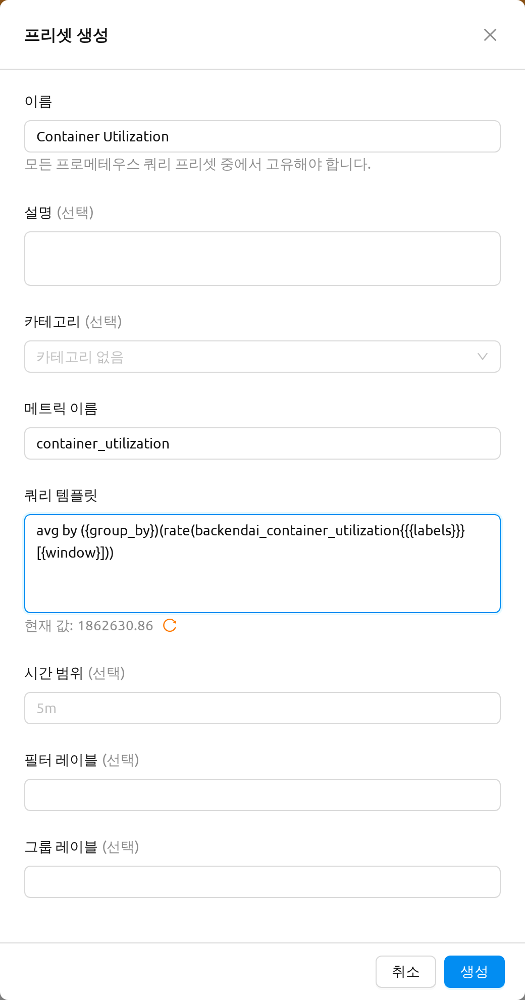
모달에는 다음 필드가 있습니다.
- 이름: 프리셋의 고유한 이름입니다. 모든 프로메테우스 쿼리 프리셋 중에서 고유해야 합니다.
- 설명: 선택기 등에 함께 표시되는 자유 형식의 설명입니다.
- 카테고리: 연관된 프리셋을 묶기 위한 선택적 카테고리입니다. 자유 입력 필드가 아니라 서버에 정의된 카테고리 목록에서 고르는 드롭다운이며, 비워두면 카테고리 없음으로 표시됩니다. 카테고리 목록을 불러오는 동안에는 이 필드에 로딩 표시가 나타나고 나머지 항목은 그대로 입력할 수 있습니다.
- 메트릭 이름: 소비자(예: 오토스케일링 규칙)에서 표시되는 메트릭 라벨입니다.
- 쿼리 템플릿: 실행할 PromQL 표현식입니다. 입력하는 동안 필드 아래의 라이브 프리뷰 영역이 작성 중인 템플릿이 실제 Prometheus 인스턴스에서 어떤 값을 반환하는지 즉시 보여줍니다. 따라서 저장하기 전에 템플릿이 의도대로 동작하는지 확인할 수 있습니다. 프리뷰는 디바운스 처리되어 입력에 맞춰 자동으로 갱신됩니다.
- 시간 범위: 범위 벡터에 사용할 기본 조회 구간(예:
5m)입니다. 범위 벡터를 사용하지 않으면 비워둡니다. - 필터 레이블: 소비자가 프리셋 위에 추가로 적용할 수 있는 선택적 레이블 셀렉터 목록입니다.
- 그룹 레이블: 쿼리 결과를 그룹화할 선택적 레이블 목록입니다.
생성을 클릭하여 프리셋을 저장합니다. 성공하면 프리셋이 목록에 나타나고 확인 토스트가 표시됩니다.
이 대화 상자는 열 때마다 항상 비어 있는 상태에서 시작합니다. 이전에 입력했던 값이나 조금 전에 수정하던 프리셋의 값이 다음 프리셋 생성 또는 프리셋 수정 대화 상자로 이어지지 않습니다.
프리셋 수정#
프리셋 행의 이름 셀에서 수정 액션을 클릭하면 프리셋 수정 모달이 열립니다. 모달에는 프리셋의 현재 값이 미리 채워져 있으며, 쿼리 템플릿의 라이브 프리뷰 영역을 포함하여 생성 다이얼로그와 동일한 필드가 제공됩니다.
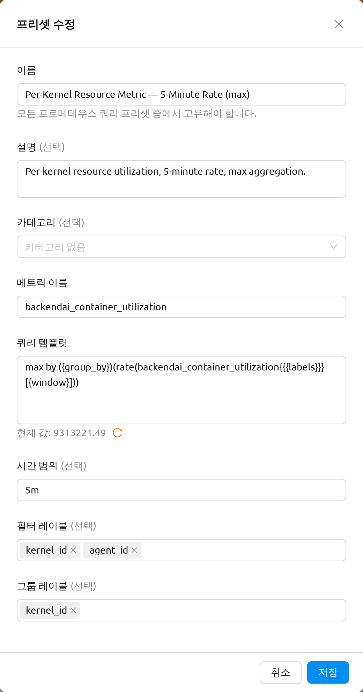
저장을 클릭하여 변경 사항을 적용합니다. 해당 프리셋을 참조하는 소비자(예: 오토스케일링 규칙)는 다음 메트릭 평가 시 자동으로 새 쿼리 템플릿을 적용합니다.
프리셋 삭제#
프리셋 행의 이름 셀에서 삭제 액션을 클릭하면 삭제 확인 모달이 열립니다.
프로메테우스 쿼리 프리셋의 삭제는 영구적이며 되돌릴 수 없습니다. 삭제된 프리셋을 참조하는 오토스케일링 규칙 등은 쿼리 템플릿을 잃게 되며, 다른 프리셋을 가리키도록 재구성하기 전까지 정상적으로 동작하지 않을 수 있습니다.
삭제는 되돌릴 수 없기 때문에, 다이얼로그는 삭제 버튼이 활성화되기 전에 확인 입력란에 프리셋 이름을 직접 입력하도록 요구합니다. 다이얼로그 제목에 표시된 프리셋 이름을 정확히 입력한 뒤 삭제를 클릭하여 확정합니다.
배포 프리셋#
배포 프리셋(Deployment Preset) 은 이미지, 런타임, 자원 슬롯, 클러스터 모드, 환경 변수, 시작 명령, 복제본 수, 공개 여부 등 모델 배포에 필요한 기본 설정을 하나의 묶음으로 관리하는 관리자 정의 템플릿입니다. 최종 사용자가 스토리지 폴더에서 모델을 배포할 때 이 프리셋을 적용할 수 있으며, 관리자는 vLLM-GPU-Large, SGLang-CPU-Small 과 같이 조직이 검증한 배포 구성을 제공할 수 있습니다. 사용자는 모든 고급 옵션을 직접 입력하지 않고도 모델을 빠르게 배포할 수 있습니다.
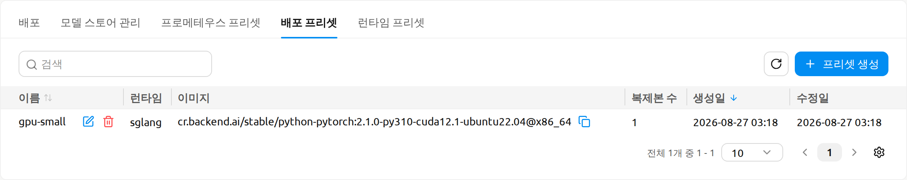
배포 프리셋이란?#
배포 프리셋은 모델 배포의 기본값을 저장하여 다음과 같은 이점을 제공합니다.
- 관리자: 조직의 하드웨어 및 정책에 맞는 검증된 배포 구성 카탈로그를 사용자에게 제공할 수 있습니다.
- 최종 사용자: 데이터 페이지의 프리셋으로 새 배포 생성 흐름을 통해 프리셋을 선택하면 고급 필드를 수동으로 채우지 않아도 됩니다.
- 운영자: 조직 전반에 걸쳐 자원 할당, 런타임, 공개 여부 기본값이 일관되게 적용되도록 보장할 수 있습니다.
프리셋으로 배포를 생성하면 프리셋의 값이 배포 런처에 자동으로 채워집니다. 사용자는 배포를 확정하기 전에 해당 값을 자유롭게 검토하고 수정할 수 있습니다.
각 프리셋은 다음 항목을 저장합니다.
- 기본 정보: 이름, 설명, 런타임, 런타임 파라미터(Custom 이외의 런타임에서 표시), 이미지.
- 자원: 자원 슬롯(CPU, 메모리, GPU), 공유 메모리(SHM), 자원 옵션.
- 클러스터: 클러스터 모드(Single Node 또는 Multi Node)와 클러스터 크기.
- 모델 및 실행: 시작 명령, 부트스트랩 스크립트, 환경 변수.
- 모델 정의 (선택 사항): 모델 이름, 모델 경로, 서비스 구성(포트, 시작 명령, 사전 시작 액션), 헬스 체크 설정, 메타데이터.
- 배포 기본값: 복제본 수, 리비전 기록 보관 수, Open to Public(공개 여부) 기본값.
배포 프리셋 관리#
배포 프리셋을 생성, 편집, 삭제할 수 있는 사용자는 관리자뿐입니다. 관리자는 관리자 배포 페이지의 배포 프리셋 탭에서 프리셋을 관리합니다.
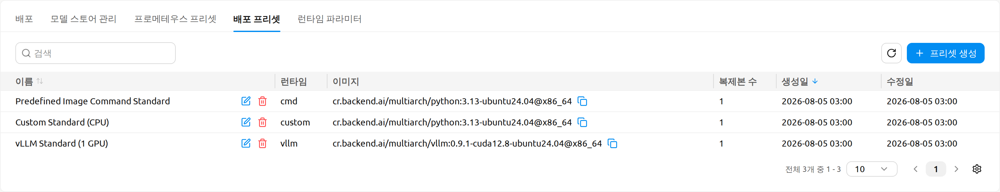
목록 화면에는 각 프리셋의 이름(수정/삭제 액션 포함), 런타임, 이미지, 복제본 수, 생성일, 수정일이 기본적으로 표시됩니다. 관리자는 이 화면에서 다음을 수행할 수 있습니다.
- 이름 또는 런타임으로 프리셋을 필터링합니다.
- 프리셋 상세 화면을 열어 전체 구성을 확인합니다.
- 프리셋을 생성, 편집, 삭제합니다.
테이블의 톱니바퀴(설정) 아이콘을 클릭하면 표시할 열을 관리할 수 있습니다. 기본적으로 숨겨져 있는 설명(Description), 시작 명령(Startup Command), 클러스터(Cluster), 배포 전략(Strategy), 공개 여부(Open to Public), 리비전 기록 보관 수(Revision History Limit) 열도 여기서 표시하도록 선택할 수 있습니다.
배포 프리셋 생성#
프리셋 목록 우측 상단의 프리셋 생성 버튼을 클릭하여 프리셋 생성 대화 상자를 엽니다. 대화 상자는 여러 카드로 구성되며, 각 카드에서 다음 항목을 입력합니다.
- 기본 정보(Basic Info) 카드:
- 이름(필수): 고유한 프리셋 이름입니다(예:
vLLM-GPU-Large). - 설명: 프리셋의 용도를 간략히 설명합니다.
- 런타임(필수): 런타임 변형입니다(예: vLLM, SGLang, Custom).
- 런타임 파라미터(Runtime Parameters): Custom 이외의 런타임 변형을 선택한 경우에만 표시됩니다. 이 섹션은 파라미터를 용도별로 묶은 여러 탭(모델 로딩(Model Loading), 자원 메모리(Resource Memory), 서빙 성능(Serving Performance))으로 구성됩니다. 필수 파라미터는 빨간색 별표(*)로 표시되며, 필수 파라미터가 비어 있으면 폼 제출이 차단됩니다.
- 이미지(필수): 배포에 사용할 컨테이너 이미지를 선택합니다.
- 이름(필수): 고유한 프리셋 이름입니다(예:
- 자원(Resources) 카드: 자원 슬롯(CPU, 메모리, GPU), 공유 메모리, 자원 옵션(키/값 쌍).
- 클러스터(Cluster) 카드: 클러스터 모드(Single Node 또는 Multi Node)와 클러스터 크기.
- 모델 및 실행(Model & Execution) 카드: 시작 명령, 부트스트랩 스크립트, 환경 변수. 시작 명령(Start Command) 필드에는 셸 문법 안내가 함께 표시됩니다. 입력한 명령은
/bin/bash -c <명령>형태로 실행되므로, 여러 명령을 세미콜론(;)으로 연결하는 등 셸 문법을 사용할 수 있습니다. - 모델 정의(Model Definition) 카드: 토글을 활성화하면 구조화된 모델 정의를 설정할 수 있습니다. 활성화 시 다음 항목을 구성합니다.
- 모델 이름 및 모델 경로: 모델의 식별자와 컨테이너 내 위치.
- 서비스 구성 (선택 사항): 포트, 셸, 시작 명령, 사전 시작 액션.
- 헬스 체크 (선택 사항): 헬스 체크 활성화(Enable Health Check) 토글로 제어합니다(기본값: 끔). 토글이 꺼져 있으면 헬스 체크 필드가 숨겨지고, 켜면 경로, 간격, 최대 재시도 횟수, 최대 대기 시간, 상태 코드, 초기 헬스 체크 유예 시간 등 모든 필드가 나타납니다.
- 메타데이터 (선택 사항): 작성자, 제목, 버전, 태스크, 카테고리 등.
- 배포(Deployment) 카드:
- 복제본 수(필수): 이 프리셋으로 생성되는 배포의 기본 복제본 수.
- 리비전 기록 보관 수: 이 프리셋으로 생성된 배포에서 보관되는 과거 리비전의 수.
- Open to Public: 이 프리셋으로 생성된 배포의 엔드포인트를 액세스 토큰 없이 접근할 수 있게 할지 여부의 기본값입니다(체크박스).
모든 카드를 입력한 뒤 프리셋 생성 버튼을 클릭하여 저장합니다. 성공 알림이 표시됩니다.
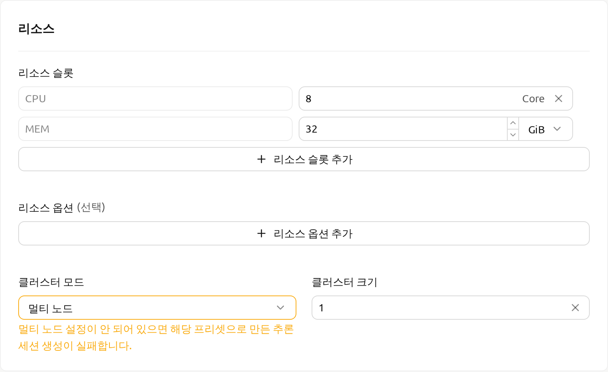
헬스 체크 활성화 토글은 vLLM 및 SGLang의 고급 모드(Advanced Mode)에도 동일하게 적용됩니다.
필수 필드가 누락되었거나 값이 유효하지 않으면 프리셋 생성 버튼이 비활성화 상태로 유지됩니다. 필수 필드에는 입력 즉시 인라인 검증 메시지가 표시됩니다.
배포 프리셋 편집#
- 프리셋 목록의 행 작업 메뉴(또는 프리셋 상세 화면)에서 프리셋 편집을 선택합니다.
- 프리셋 편집 대화 상자가 현재 값으로 채워진 상태로 열립니다. 사용 가능한 섹션은 프리셋 생성 대화 상자와 동일합니다.
- 필요한 값을 수정한 뒤 프리셋 편집 버튼을 클릭하여 저장합니다.
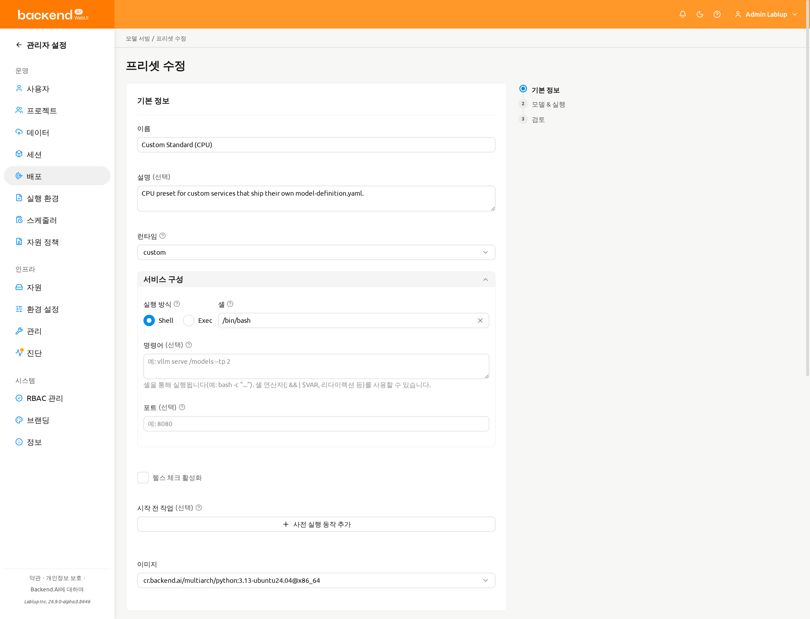
프리셋을 편집하면 이후 생성되는 배포의 기본값만 변경됩니다. 이미 해당 프리셋으로 생성된 기존 배포에는 영향을 주지 않습니다.
배포 프리셋 삭제#
- 프리셋 목록(또는 프리셋 상세 화면)의 작업 메뉴에서 프리셋 삭제를 선택합니다.
- 프리셋 이름을 직접 입력하여 확인하는 대화 상자가 표시됩니다. 입력한 값이 프리셋 이름과 정확히 일치할 때까지 확인 버튼이 비활성화 상태로 유지됩니다.
- 프리셋 이름을 입력한 뒤 확인을 클릭합니다.
배포 프리셋 삭제는 되돌릴 수 없습니다. 프리셋 자체는 제거되지만, 해당 프리셋으로 이미 생성된 배포는 영향을 받지 않고 그대로 실행됩니다. 이후에는 더 이상 이 프리셋을 참조할 수 없습니다.
모델을 배포할 때 프리셋 사용하기#
최종 사용자는 데이터 페이지에서 스토리지 폴더로부터 모델을 배포할 때 열리는 프리셋으로 새 배포 생성 모달을 통해 배포 프리셋을 적용합니다.
데이터 페이지에서 배포하려는 모델 폴더를 찾습니다.
폴더 행의 서비스로 배포 버튼을 클릭합니다.
프리셋으로 새 배포 생성 모달이 열립니다. 적용할 배포 프리셋과 대상 자원 그룹을 선택합니다.
배포 전에 프리셋의 구성을 확인하려면 프리셋 선택기 옆의 ⓘ(정보) 버튼을 클릭하여 배포 프리셋 상세 화면을 엽니다.
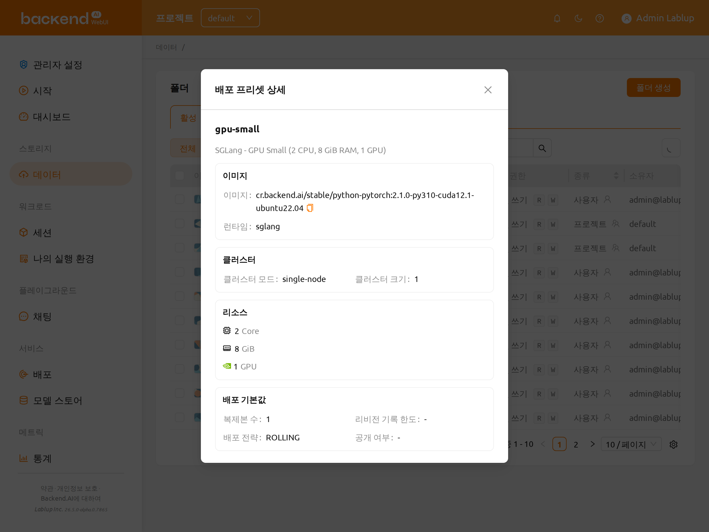
그림 24.37 확인(OK) 버튼을 클릭하면 선택한 프리셋의 값으로 배포가 생성됩니다.
고급 구성이 필요한 경우에는 배포(Deployment) 페이지로 이동하여 배포를 직접 생성합니다(고급 모드). 배포 페이지의 리비전 추가 모달에서는 프리셋 모드(Preset Mode) 와 고급 모드(Advanced Mode) 를 선택할 수 있으며, 고급 모드를 선택하면 프리셋 값이 미리 채워진 배포 런처가 열려 확정 전에 모든 필드를 검토하고 조정할 수 있습니다.
자원 정책 관리#
키페어 자원 정책#
Backend.AI에서 관리자는 각 키페어, 사용자, 프로젝트에 사용 가능한 총 자원에 대한 제한을 설정할 수 있습니다. 자원 정책을 통해 허용되는 최대 자원과 기타 연산 세션 관련 설정을 정의할 수 있습니다. 또한 사용자 또는 연구 요구 사항과 같은 다양한 필요에 맞는 여러 자원 정책을 생성하고 개별적으로 적용할 수 있습니다.
자원 정책 페이지에서 관리자는 등록된 모든 자원 정책의 목록을 볼 수 있습니다. 관리자는 이 페이지에서 키페어, 사용자, 프로젝트에 대해 설정된 자원 정책을 직접 검토할 수 있습니다. 키페어에 대한 자원 정책을 먼저 살펴보겠습니다. 무한대 기호(∞)는 해당 자원에 자원 제한이 적용되지 않았음을 나타냅니다.
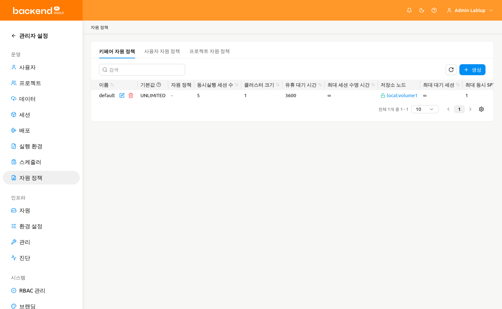
이 가이드에서 사용되는 사용자 계정은 현재 default 자원 정책에 할당되어 있습니다. 이는 사용자 페이지의 자격 증명 탭에서 확인할 수 있습니다. 자원 정책 패널에서 모든 자원 정책이 default로 설정되어 있음을 확인할 수도 있습니다.
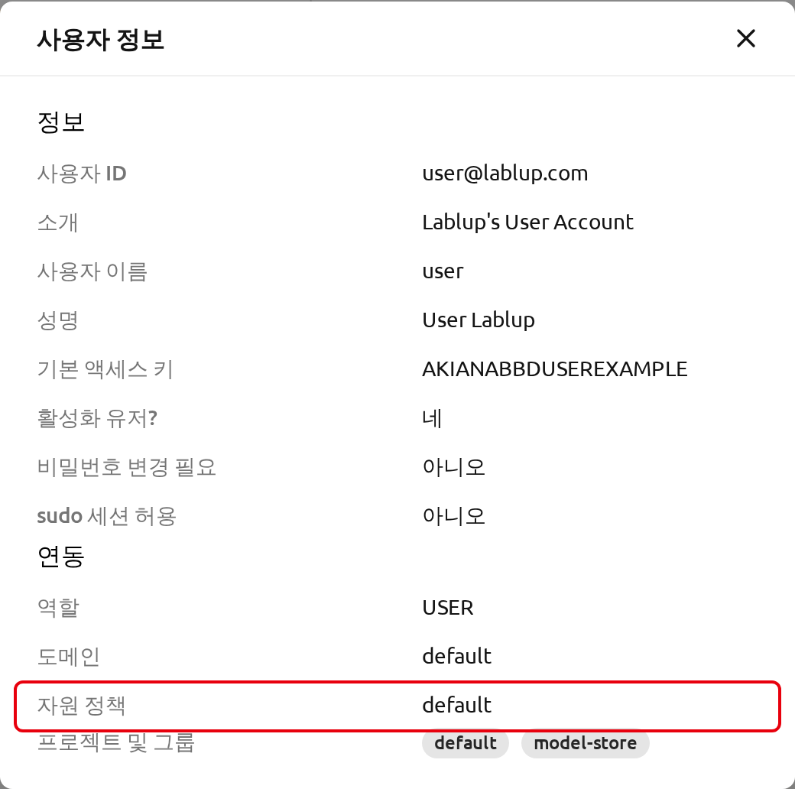
키페어 자원 정책 테이블에는 다음 컬럼이 표시됩니다. 이 중 두 컬럼은 제한 값이 아니라 정책이 적용되는 방식을 설명합니다.
- 이름: 정책 이름입니다. 셀에서 정보, 수정, 삭제 인라인 액션도 제공합니다.
- 기본값: 세션이 CPU나 메모리를 명시적으로 요청하지 않았을 때 정책이 동작하는 방식입니다.
UNLIMITED는 에이전트 노드 용량까지 사용을 허용하고,LIMITED는 명시적으로 지정하지 않으면 자원을 할당하지 않습니다. 대부분의 경우UNLIMITED를 권장합니다. 컬럼 헤더의 물음표 아이콘 위에 마우스를 올리면 UI에서도 같은 설명을 볼 수 있습니다. - 자원 정책: 정책이 허용하는 자원 슬롯입니다.
- 동시실행 세션 수, 클러스터 크기, 유휴 대기 시간, 세션 최대 실행시간, 스토리지 노드, 최대 대기 세션, 최대 동시 SFTP 세션: 아래에서 설명하는 개별 제한 값입니다.
- 최대 대기 세션 리소스 슬롯:
PENDING상태로 대기 중인 세션에 정책이 허용하는 자원 슬롯이며, 자원 종류별로 표시됩니다(무제한인 경우∞). 이 컬럼은 WebUI에서 조회 전용으로, 자원 정책 대화 상자에는 해당 항목이 없습니다. - 생성 날짜: 정책이 생성된 시각입니다.
테이블의 속성 필터, 정렬, 페이지 이동 컨트롤을 사용해 필요한 정책을 찾을 수 있습니다.
자원 정책을 변경하려면 해당 정책의 이름 열에 있는 수정(연필) 액션을 클릭합니다. 키페어 자원 정책 수정 대화 상자에서 목록의 자원 정책을 구분하는 기본 키 역할을 하는 자원 정책 이름을 제외한 모든 옵션을 편집할 수 있습니다. CPU, RAM, fGPU 하단의 무제한 체크박스를 해제하고 자원 제한을 원하는 값으로 설정합니다. 할당된 자원이 전체 하드웨어 용량보다 적은지 확인하세요. 이 경우 CPU, RAM, fGPU를 각각 2, 4, 1로 설정합니다. 저장을 클릭하여 변경된 자원 정책을 적용합니다.
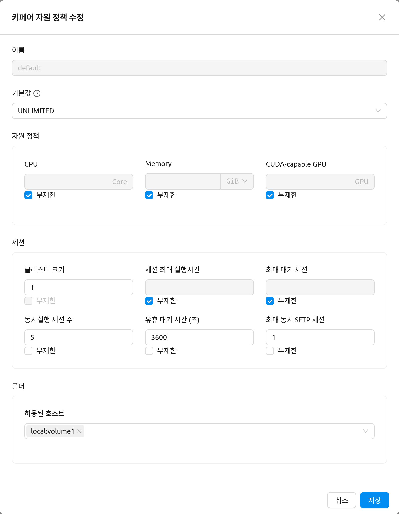
자원 정책 대화 상자의 각 옵션에 대한 세부 정보는 아래 설명을 참조하세요.
자원 정책
- CPU: 최대 CPU 코어 수를 지정합니다. (최대값: 512)
- Memory: 최대 메모리 양을 GB 단위로 지정합니다. 메모리를 GPU 메모리의 최대값보다 두 배 크게 설정하는 것이 좋습니다. (최대값: 1024)
- CUDA-capable GPU: 최대 물리적 GPU 수를 지정합니다. 서버에서 fractional GPU가 활성화된 경우 이 설정은 효과가 없습니다. (최대값: 64)
- CUDA-capable GPU (fractional): Fractional GPU (fGPU)는 GPU를 효율적으로 사용하기 위해 단일 GPU를 여러 파티션으로 분할하는 기능입니다. 필요한 최소 fGPU 양은 각 이미지에 따라 다릅니다. 서버에서 fractional GPU가 활성화되지 않은 경우 이 설정은 효과가 없습니다. (최대값: 256)
세션
- 클러스터 크기: 세션을 생성할 때 구성할 수 있는 멀티 컨테이너 또는 멀티 노드 수의 최대 제한을 설정합니다.
- 세션 최대 실행시간 (초):
PENDING및RUNNING상태를 포함하여 활성 상태에서 예약된 연산 세션의 최대 수명을 제한합니다. 이 시간이 지나면 세션이 완전히 활용되고 있더라도 강제 종료됩니다. 이는 세션이 무기한으로 실행되는 것을 방지하는 데 유용합니다. - 최대 대기 세션: 동시에
PENDING상태에 있을 수 있는 최대 연산 세션 수입니다. - 동시 실행 세션수: 키페어당 최대 동시 연산 세션 수입니다. 예를 들어 이 값이 3으로 설정된 경우, 이 자원 정책에 바인딩된 사용자는 동시에 3개 이상의 연산 세션을 생성할 수 없습니다. (최대값: 100)
- 유휴 대기 시간 (초): 사용자가 세션을 그대로 둘 수 있는 구성 가능한 기간입니다. idle timeout 동안 연산 세션에 아무런 활동이 없으면 세션이 자동으로 가비지 수집되고 삭제됩니다. "유휴"의 기준은 다양할 수 있으며 관리자가 설정합니다. (최대값: 15552000 (약 180일))
- 최대 동시 SFTP 세션: 최대 동시 SFTP 세션 수입니다.
폴더
- 허용된 호스트: Backend.AI는 많은 NFS 마운트 포인트를 지원합니다. 이 필드는 이들에 대한 접근성을 제한합니다. "data-1"이라는 NFS가 Backend.AI에 마운트되어 있더라도 자원 정책에서 허용하지 않으면 사용자가 액세스할 수 없습니다.
- (더 이상 사용되지 않음) Max. #: 생성/초대할 수 있는 스토리지 폴더의 최대 수입니다. (최대값: 100).
키페어 자원 정책 목록에서 default 정책의 Resources 값이 업데이트되었는지 확인합니다.
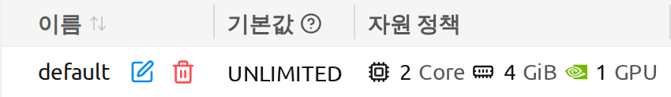
테이블 오른쪽 상단의 생성 버튼을 클릭하여 새 자원 정책을 생성할 수 있습니다. 각 설정 값은 위에서 설명한 것과 동일합니다.
자원 정책을 생성하고 키페어와 연결하려면 사용자 페이지의 자격 증명 탭으로 이동하여 원하는 키페어의 이름 열에 있는 수정(연필) 액션을 클릭하고 자원 정책 선택 필드를 클릭하여 선택합니다.
특정 사용자에 대한 키페어 자원 정책을 선택할 때, 선택 테이블에는 각 정책에 현재 어떤 사용자의 키페어가 연결되어 있는지 보여주는 할당 키페어 컬럼이 포함되어 있어, 정책을 선택하기 전에 사용자의 기존 할당 상태를 확인할 수 있습니다.
이름 열의 휴지통 아이콘을 클릭하여 각 자원 키페어를 삭제할 수도 있습니다. 아이콘을 클릭하면 확인 대화 상자가 나타납니다. 확인 입력란에 정책 이름을 입력한 다음 삭제 버튼을 클릭하여 삭제합니다.
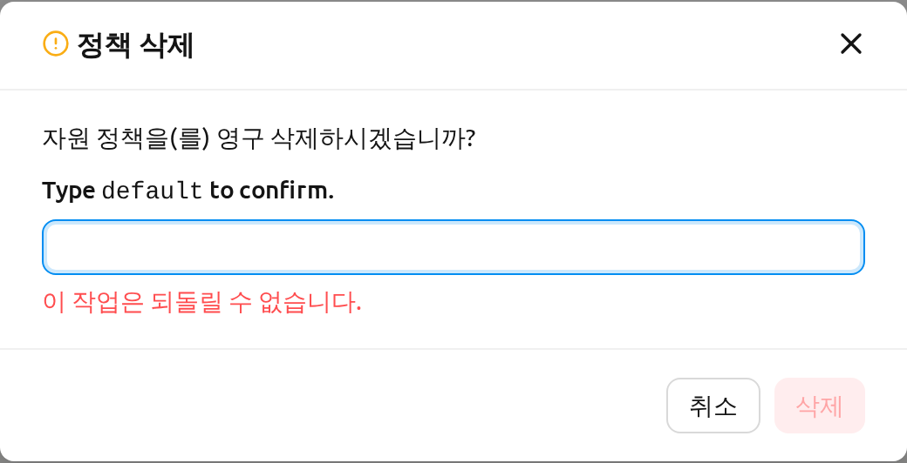
삭제할 자원 정책을 따르는 사용자(비활성 사용자 포함)가 있으면 삭제할 수 없습니다. 자원 정책을 삭제하기 전에 해당 자원 정책 아래에 남아있는 사용자가 없는지 확인하십시오.
특정 열을 숨기거나 표시하려면 테이블 오른쪽 하단의 설정 (톱니바퀴)를 클릭합니다. 표시하려는 열을 선택할 수 있는 대화 상자가 나타납니다.
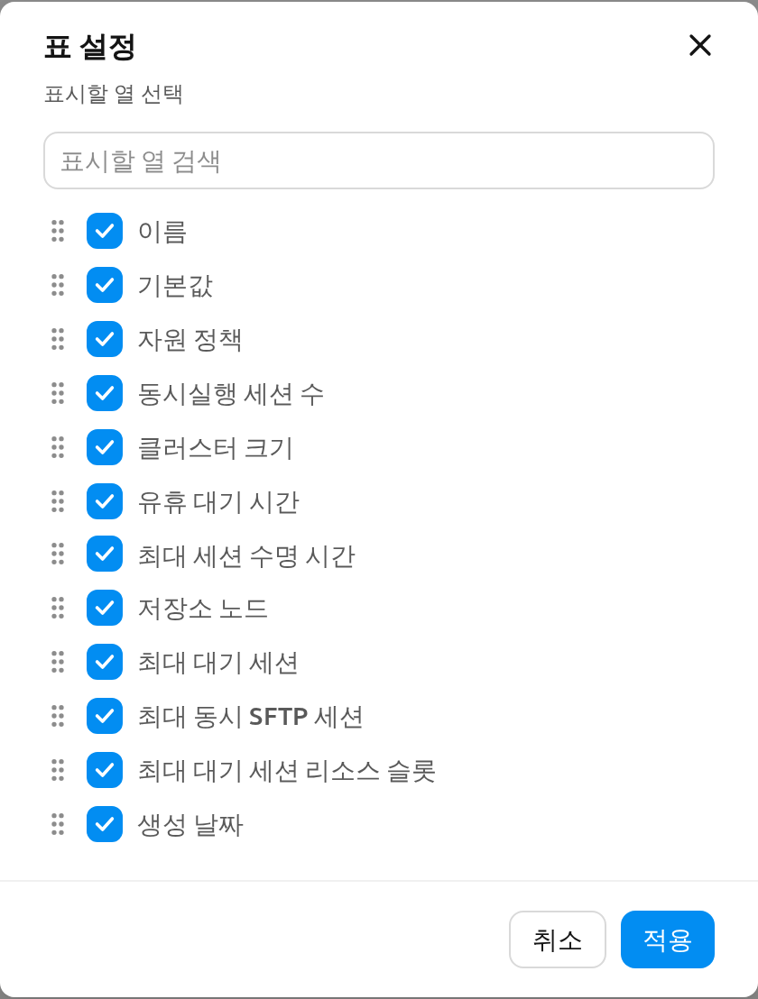
사용자 자원 정책#
Backend.AI는 사용자 자원 정책 관리를 지원합니다. 각 사용자는 여러 키페어를 가질 수 있지만, 사용자는 하나의 사용자 자원 정책만 가질 수 있습니다. 사용자 자원 정책 페이지에서는 Max Folder Count 및 Max Folder Size와 같은 폴더 관련 다양한 설정에 대한 제한뿐만 아니라 Max Session Count Per Model Session 및 Max Customized Image Count와 같은 개별 자원 제한도 설정할 수 있습니다.
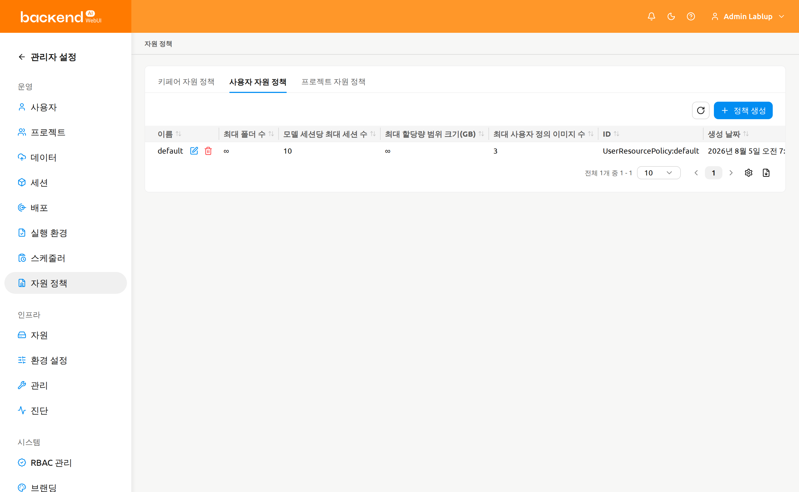
테이블에는 ID, 이름(인라인 수정 및 삭제 액션 포함), 최대 폴더 수, 최대 할당량 범위 크기, 최대 사용자 정의 이미지 수, 생성 날짜 컬럼이 표시됩니다. 컬럼 설정 컨트롤로 필요 없는 컬럼을 숨길 수 있으며, 선택한 설정은 브라우저별로 유지됩니다.
정렬과 페이지 이동은 모두 서버에서 처리되므로 정책이 많은 클러스터에서도 탭이 빠르게 동작합니다. 컬럼 헤더를 클릭해 정렬 순서를 바꾸고, 테이블 아래의 페이지 이동 컨트롤로 결과를 넘겨볼 수 있습니다.
새 사용자 자원 정책을 생성하려면 생성 버튼을 클릭합니다.
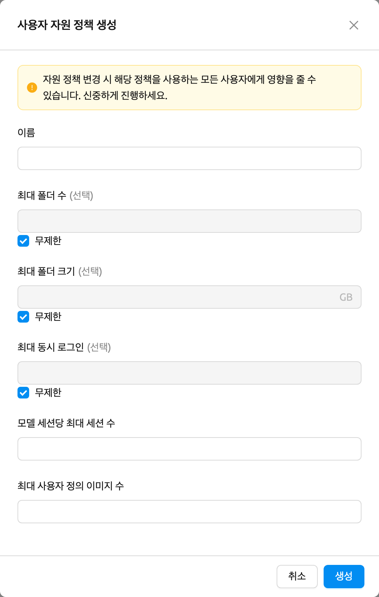
- 이름: 사용자 자원 정책의 이름입니다.
- 최대 폴더 수: 사용자가 생성할 수 있는 최대 폴더 수입니다. 사용자의 폴더 수가 이 값을 초과하면 새 폴더를 생성할 수 없습니다. 무제한으로 설정하면 "∞"로 표시됩니다.
- 최대 폴더 크기: 사용자의 스토리지 공간의 최대 크기입니다. 사용자의 스토리지 공간이 이 값을 초과하면 새 스토리지 폴더를 생성할 수 없습니다. 무제한으로 설정하면 "∞"로 표시됩니다. 목록에서는 이 제한이 최대 할당량 범위 크기 컬럼에 설정 값에 맞는 단위로 표시됩니다.
- 최대 동시 로그인: 사용자가 동시에 로그인할 수 있는 최대 세션 수입니다. 무제한으로 설정하면 "∞"로 표시됩니다.
- 모델 세션당 최대 세션 수: 사용자가 생성한 모델 서비스당 사용 가능한 최대 세션 수입니다. 이 값을 증가시키면 세션 스케줄러에 과부하가 걸리고 잠재적으로 시스템 다운타임으로 이어질 수 있으므로 이 설정을 조정할 때 주의하시기 바랍니다.
- 최대 사용자 정의 이미지 수: 사용자가 생성할 수 있는 최대 커스터마이징된 이미지 수입니다. 사용자의 커스터마이징된 이미지 수가 이 값을 초과하면 새 커스터마이징된 이미지를 생성할 수 없습니다. 커스터마이징된 이미지에 대해 자세히 알아보려면 나의 실행 환경 섹션을 참고하세요.
기존 정책을 변경하려면 이름 열의 수정(연필) 액션을 클릭합니다. 대화 상자의 제목은 사용자 자원 정책 수정이며 제출 버튼은 저장입니다. 삭제하려면 삭제(휴지통) 액션을 클릭합니다.
자원 정책을 변경하면 해당 정책을 사용하는 모든 사용자에게 영향을 미칠 수 있으므로 주의하여 사용하십시오.
키페어 자원 정책과 마찬가지로 테이블 오른쪽 하단의 설정 (톱니바퀴) 버튼을 클릭하여 원하는 열만 선택하고 표시할 수 있습니다.
프로젝트 자원 정책#
Backend.AI는 프로젝트 자원 정책 관리를 지원합니다. 프로젝트 자원 정책은 프로젝트의 스토리지 공간(가용량) 및 폴더 관련 제한을 관리합니다.
자원 정책 페이지의 프로젝트 탭을 클릭하면 프로젝트 자원 정책 목록을 볼 수 있습니다.
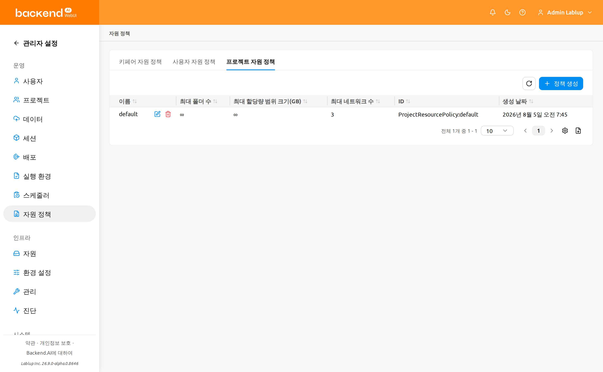
프로젝트 자원 정책 테이블에서 정책 목록을 확인하고 각 항목의 인라인 수정 및 삭제 액션을 사용할 수 있습니다. 테이블의 속성 필터, 정렬, 페이지 이동 컨트롤을 사용해 필요한 정책을 빠르게 찾을 수 있습니다.
새 프로젝트 자원 정책을 생성하려면 테이블 오른쪽 상단의 생성 버튼을 클릭합니다.
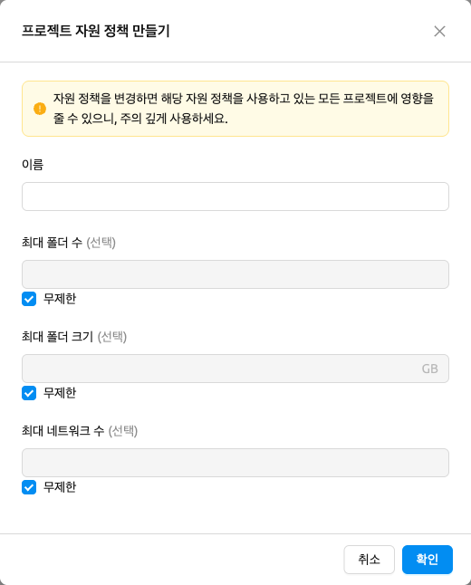
- 이름: 프로젝트 자원 정책의 이름입니다.
- 최대 폴더 수: 관리자가 생성할 수 있는 최대 프로젝트 폴더 수입니다. 프로젝트 폴더 수가 이 값을 초과하면 관리자는 새 프로젝트 폴더를 생성할 수 없습니다. 무제한으로 설정하면 "∞"로 표시됩니다.
- 최대 폴더 크기: 프로젝트의 스토리지 공간의 최대 크기입니다. 프로젝트의 스토리지 공간이 이 값을 초과하면 관리자는 새 프로젝트 폴더를 생성할 수 없습니다. 무제한으로 설정하면 "∞"로 표시됩니다.
- 최대 네트워크 수: 프로젝트에 생성할 수 있는 최대 네트워크 수입니다. 무제한으로 설정하면 "∞"로 표시됩니다.
각 필드의 의미는 사용자 자원 정책과 유사합니다. 차이점은 프로젝트 자원 정책은 프로젝트 폴더에 적용되고 사용자 자원 정책은 사용자 폴더에 적용된다는 점입니다.
변경하려면 이름 열의 수정(연필) 액션을 클릭합니다. 대화 상자의 제목은 프로젝트 자원 정책 수정이며 제출 버튼은 저장입니다. 자원 정책 이름은 편집할 수 없습니다. 삭제는 삭제(휴지통) 액션을 클릭하여 수행할 수 있습니다.
자원 정책을 변경하면 해당 정책을 사용하는 모든 사용자에게 영향을 미칠 수 있으므로 주의하여 사용하십시오.
테이블 오른쪽 하단의 설정 버튼을 클릭하여 원하는 열만 선택하고 표시할 수 있습니다.
대기 중인 세션 통합 보기#
관리자용 세션 페이지에는 두 개의 탭이 있습니다. 세션 탭은 클러스터의 모든 연산 세션을 보여 주고, 대기 중인 세션 탭에서는 선택한 자원 그룹 내의 모든 대기 중인 세션을 한눈에 확인할 수 있습니다. 상태 옆에 표시되는 인덱스 번호는 충분한 자원이 확보되면 세션이 생성될 대기열 위치를 나타냅니다.
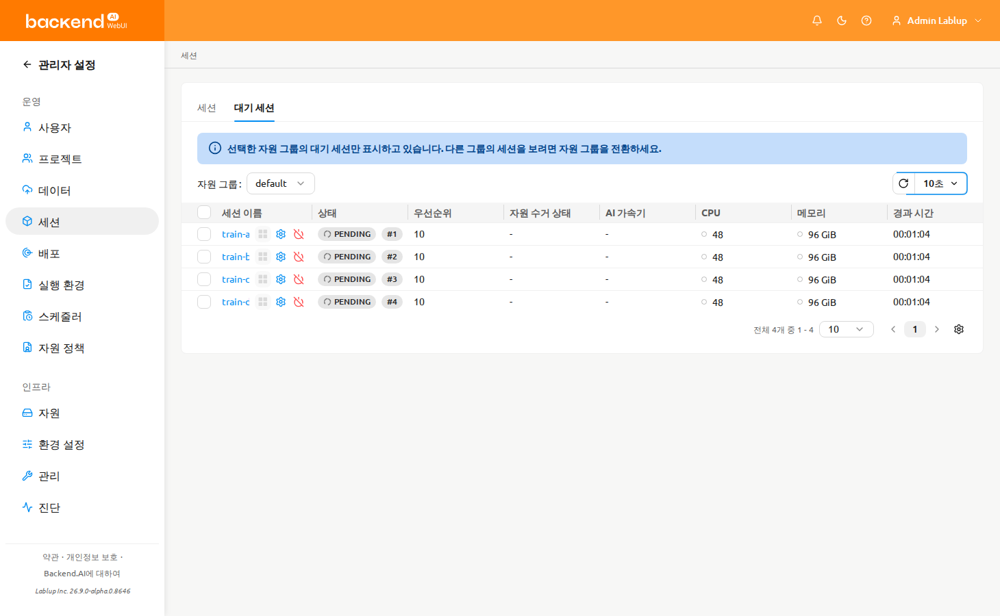
사용자용 세션 페이지와 마찬가지로 세션 이름을 클릭하면 세션에 대한 자세한 정보를 표시하는 drawer가 열립니다.
대기 중인 세션 목록에는 각 세션의 우선순위도 표시되며, 이 값이 대기열의 순서를 결정합니다. 우선순위를 변경하려면
세션 행의 설정(톱니바퀴) 액션을 클릭하거나, 체크박스로 대기 중인 세션을 하나 이상 선택한 뒤 목록 위의 설정
버튼을 클릭합니다. 두 경우 모두 세션 설정 대화 상자가 열리며, 우선순위를 0에서 100 사이의 값으로 설정한 후
저장을 클릭합니다. 변경이 완료되면 세션 우선순위가 성공적으로 변경되었다는 메시지가 표시됩니다. 우선순위는 세션이
PENDING 상태일 때만 변경할 수 있습니다.
우선순위 컬럼과 우선순위 편집 액션은 Backend.AI Manager가 26.4.0 이상 버전일 때만 표시됩니다.
세션 탭의 속성 필터에서는 다음 조건을 사용할 수 있습니다.
- 프로젝트: 이 클러스터의 프로젝트를 검색할 수 있는 드롭다운에서 선택합니다. 목록에서 프로젝트를 고르므로 식별자를 따로 찾을 필요가 없으며, 생성된 필터 태그에는 프로젝트 이름이 표시됩니다.
- 세션 이름, 자원 그룹, 에이전트, 소유자 이메일: 텍스트 일치로 목록을 좁힙니다.
사용자 설정에서 실험적 기능인 세션 리소스 그리드 뷰를 활성화하면(실험적 기능 섹션 참고) 세션 탭의 새로고침 버튼 옆에 테이블과 그리드를 전환하는 보기 모드 컨트롤이 표시됩니다. 그리드는 세션마다 하나의 셀을 표시하며, 각 셀은 해당 세션의 실시간 자원 사용률에 따라 색상이 정해집니다. 그리드 자체의 컨트롤에 대한 자세한 내용은 세션 목록 보기 섹션을 참고하세요.
Fair Share 스케줄러#
Fair Share 스케줄러 페이지는 관리자 설정 메뉴에서 사용할 수 있습니다. 이 기능을 통해 관리자는 자원 그룹, 도메인, 프로젝트, 사용자의 계층 구조에 따라 Fair Share 스케줄링 가중치를 관리할 수 있습니다.
Fair Share 스케줄링은 과거 사용 이력을 기반으로 컴퓨팅 자원을 배분하여 사용자 간에 자원이 공정하게 분배되도록 합니다. 과거에 자원을 적게 사용한 사용자는 높은 스케줄링 우선순위를 받고, 많이 사용한 사용자는 낮은 우선순위를 받습니다. 관리자는 계층 구조의 각 단계에서 가중치를 조정하여 이 동작을 세밀하게 제어할 수 있습니다.
Fair Share 스케줄러는 자원 그룹의 스케줄러 타입이 FAIR_SHARE로 설정된 경우에만
사용할 수 있습니다. 자원 그룹의 스케줄러 타입을 설정하려면
자원 그룹 관리 섹션을 참고하세요.
이 기능에 접근하려면 사이드바의 관리자 설정에서 스케줄러 메뉴 항목을 클릭합니다. 페이지에는 Fair Share 설정 탭과 4단계 드릴다운 인터페이스가 표시됩니다.
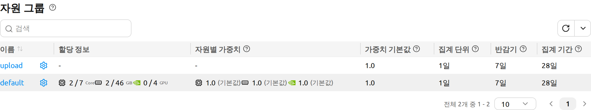
페이지는 다음과 같은 4개의 계층적 단계로 구성됩니다:
- 자원 그룹: 각 자원 그룹의 핵심 Fair Share 파라미터를 설정합니다.
- 도메인: 자원 그룹 내 도메인별 가중치를 설정합니다.
- 프로젝트: 도메인 내 프로젝트별 가중치를 설정합니다.
- 사용자: 프로젝트 내 개별 사용자의 가중치를 설정합니다.
페이지 상단의 단계 표시줄은 현재 계층 구조에서의 위치를 보여줍니다. 완료된 단계에는 선택한 항목의 이름이 표시됩니다. 완료된 단계를 클릭하면 해당 레벨로 돌아갈 수 있습니다.
선택한 자원 그룹의 스케줄러 타입이 FAIR_SHARE로 설정되어 있지 않은 경우,
해당 자원 그룹에 Fair Share 스케줄러가 적용되어 있지 않다는 경고 알림이 표시됩니다.
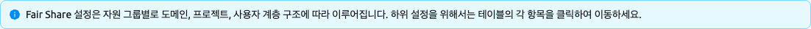
또한 현재 보고 있는 대상이 드릴다운한 자원 그룹을 실제로 사용할 수 없는 경우에도 경고가 표시됩니다. 이 검사는 내려오면서 선택한 도메인 또는 프로젝트를 기준으로 수행되므로, 경고는 이전 선택이 아니라 현재 계층 위치를 반영합니다.
- 도메인 단계에서는 선택한 자원 그룹이 허용되지 않은 도메인 옆에 경고 아이콘이 표시됩니다. 아이콘 위에 마우스를 올리면 해당 자원 그룹이 하위 프로젝트에서는 허용될 수 있다는 안내가 표시됩니다.
- 프로젝트 단계에서도 선택한 자원 그룹이 허용되지 않은 프로젝트에 같은 아이콘이 표시됩니다.
- 사용자 단계에서는 선택한 프로젝트에 속한 사용자가 선택한 자원 그룹을 사용할 수 없다는 경고가 표시됩니다.
동일한 알림이 가중치 설정 모달 안에도 표시되므로, 테이블에서만이 아니라 가중치를 수정하는 시점에도 불일치를 확인할 수 있습니다.
각 단계에서 다음과 같은 공통 기능을 사용할 수 있습니다:
- 페이지네이션: 페이지 크기를 설정하여 결과를 탐색할 수 있습니다.
자원 그룹#
자원 그룹 단계에서는 모든 자원 그룹과 Fair Share 설정 정보가 테이블로 표시됩니다.
테이블에는 다음과 같은 컬럼이 포함됩니다:
- 이름: 자원 그룹의 이름입니다. 이름을 클릭하면 해당 자원 그룹의 도메인 레벨 설정으로 이동합니다.
- 제어: 자원 그룹 Fair Share 설정 모달을 여는 설정(톱니바퀴) 버튼입니다.
- 할당 정보: 자원 그룹에 할당된 각 자원 타입별 사용량/용량을 보여줍니다 (예: CPU, Memory, CUDA GPU).
- 자원별 가중치: 자원 타입별 가중치입니다. 기본 가중치를 사용하는 경우 "기본값"으로 표시됩니다.
- 가중치 기본값: 가중치가 지정되지 않은 도메인, 프로젝트, 사용자에 적용되는 기본 가중치 값입니다.
- 집계 단위: 사용량을 집계하는 기간(일 단위)입니다.
- 반감기: 과거 사용량의 반영 비율이 절반으로 줄어드는 기간(일 단위)입니다.
- 집계 기간: Fair Share 계산에 반영되는 사용량 기록의 조회 범위(일 단위)입니다.
자원 그룹 Fair Share 설정#
자원 그룹의 제어 컬럼에 있는 설정(톱니바퀴) 버튼을 클릭하면 Fair Share 설정 모달이 열립니다.
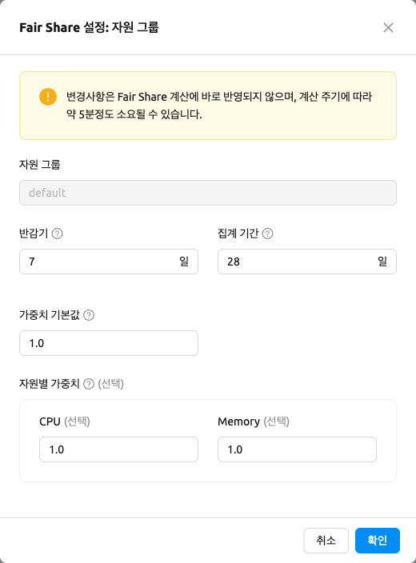
변경사항은 Fair Share 계산에 바로 반영되지 않으며, 계산 주기에 따라 약 5분 정도 소요될 수 있습니다.
모달에는 다음과 같은 필드가 포함됩니다:
- 자원 그룹: 자원 그룹 이름을 보여주는 읽기 전용 필드입니다.
- 반감기: 과거 사용량의 반영 비율이 절반으로 줄어드는 기간으로, 일 단위로 지정합니다 (최소 1). 예를 들어 7일로 설정하면 7일 전 사용량은 50%, 14일 전 사용량은 25%의 비율로 계산됩니다. 집계 단위의 배수로 설정하는 것을 권장합니다.
- 집계 기간: Fair Share 계산에 반영되는 사용량 기록의 조회 범위로, 일 단위로 지정합니다 (최소 1). 이 기간 이전의 사용량은 계산에서 제외됩니다. 반감기의 배수로 설정하는 것을 권장합니다.
- 가중치 기본값: 가중치가 지정되지 않은 도메인, 프로젝트, 사용자에 적용되는 기본값입니다 (최소 1, 단계 0.1).
- 자원별 가중치: 자원 타입별 가중치(예: CPU, Memory, GPU)이며 각각 최소 1, 단계 0.1입니다. 이 섹션은 자원 그룹에 자원별 가중치가 존재하는 경우에만 표시됩니다.
도메인#
자원 그룹을 선택하면 도메인 단계에서 해당 자원 그룹 내 도메인의 Fair Share 가중치와 사용량을 테이블로 확인할 수 있습니다.
테이블에는 다음과 같은 컬럼이 포함됩니다:
- 이름: 도메인 이름입니다. 이름을 클릭하면 해당 도메인의 프로젝트 레벨 설정으로 이동합니다.
- 제어: 가중치 설정 모달을 여는 설정(톱니바퀴) 버튼입니다.
- 가중치: 현재 가중치 값입니다. 기본 가중치를 사용하는 경우 "기본값"으로 표시됩니다.
- 우선 순위 계수: Fair Share 스케줄러에 의해 계산된 스케줄링 우선순위입니다. 값이 높을수록 높은 우선순위를 갖습니다.
- 자원 할당: 자원 타입별 일 평균 감쇠 자원 사용량입니다 (CPU, Memory, GPU / Day).
- 수정일: 마지막 수정 시각입니다.
- 생성일: 생성 시각입니다.
테이블 왼쪽의 체크박스를 사용하여 여러 행을 선택할 수 있습니다. 행이 선택되면 두 개의 추가 버튼이 나타납니다:
- 사용량 그래프 (차트 아이콘): 선택한 항목의 사용량 기록 모달을 엽니다.
- 일괄 편집 (톱니바퀴 아이콘): 선택한 항목의 가중치를 한 번에 편집하는 모달을 엽니다.
프로젝트#
도메인을 선택하면 프로젝트 단계에서 도메인 단계와 동일한 컬럼 구조의 프로젝트 테이블이 표시됩니다. 프로젝트 이름을 클릭하면 사용자 단계로 이동합니다.
행을 선택하면 동일한 일괄 작업(사용량 그래프 및 일괄 편집)을 사용할 수 있습니다.
사용자#
프로젝트를 선택하면 사용자 단계에서 개별 사용자의 Fair Share 가중치와 사용량을 테이블로 확인할 수 있습니다.
테이블에는 다음과 같은 컬럼이 포함됩니다:
- 이메일: 사용자의 이메일 주소입니다.
- 이름: 사용자의 이름입니다.
- 제어: 가중치 설정 모달을 여는 설정(톱니바퀴) 버튼입니다.
- 가중치: 현재 가중치 값입니다. 기본 가중치를 사용하는 경우 "기본값"으로 표시됩니다.
- 우선 순위 계수: Fair Share 스케줄러에 의해 계산된 스케줄링 우선순위입니다.
- 자원 할당: 자원 타입별 일 평균 감쇠 자원 사용량입니다.
- 수정일: 마지막 수정 시각입니다.
- 생성일: 생성 시각입니다.
행을 선택하면 동일한 일괄 작업(사용량 그래프 및 일괄 편집)을 사용할 수 있습니다.
Fair Share 가중치 편집#
도메인, 프로젝트 또는 사용자의 Fair Share 가중치를 편집하려면 해당 행의 제어 컬럼에 있는 설정(톱니바퀴) 버튼을 클릭합니다. 가중치 설정 모달이 열립니다.
변경사항은 Fair Share 계산에 바로 반영되지 않으며, 계산 주기에 따라 약 5분 정도 소요될 수 있습니다.
단일 편집 모드에서는 모달에 항목 이름(읽기 전용)과 가중치 입력 필드가 표시됩니다.
- 가중치: Fair Share 스케줄링 우선순위를 결정하는 배율입니다. 가중치가 높을수록 높은 우선순위를 받습니다. 기본값은 "1.0"이며, 가중치 "2.0"은 "1.0"보다 2배 높은 우선순위를 가집니다. 최소값은 1이고 단계는 0.1입니다.
여러 항목의 가중치를 한 번에 편집하려면 테이블의 체크박스로 원하는 행을 선택한 후 일괄 편집(톱니바퀴 아이콘) 버튼을 클릭합니다. 일괄 편집 모드에서는 모달에 선택한 모든 항목의 태그 목록과 모든 항목에 적용될 단일 가중치 입력 필드가 표시됩니다.
선택한 자원 그룹의 스케줄러 타입이 FAIR_SHARE로 설정되어 있지 않은 경우,
모달에 경고 알림이 표시됩니다.
사용량 기록 조회#
도메인, 프로젝트 또는 사용자의 사용량 기록을 확인하려면 테이블의 체크박스로 원하는 행을 선택한 후 사용량 그래프(차트 아이콘) 버튼을 클릭합니다. 사용량 기록 모달이 열립니다.
모달에는 다음 내용이 표시됩니다:
- 기간 선택: 사용량 기록의 날짜 범위를 선택합니다. 최근 7일, 최근 30일, 최근 90일의 프리셋을 사용할 수 있습니다.
- 새로고침 버튼: 사용량 데이터를 수동으로 갱신합니다.
- 컨텍스트 정보: 현재 단계에 따라 자원 그룹, 도메인, 프로젝트 정보를 표시합니다.
- 선택된 항목: 선택한 항목의 이름이 태그로 표시됩니다.
- 사용량 차트: 선택한 기간 동안의 일 평균 자원 사용량을 보여주는 차트입니다.
이미지 관리#
관리자는 실행 환경 페이지의 이미지 탭에서 연산 세션 생성에 사용되는 이미지를
관리할 수 있습니다. 이 탭에서는 현재 Backend.AI 서버에 있는 모든 이미지의
메타 정보가 표시됩니다. 레지스트리, 아키텍처, 네임스페이스, 이미지 이름,
다이제스트, 각 이미지에 필요한 최소 자원 등의 정보를 확인할 수 있습니다. 하나
이상의 에이전트 노드에 다운로드된 이미지의 경우 상태 컬럼에 installed 태그가
표시됩니다. 비공개 이미지의 경우 상태 컬럼에 비공개 태그가 함께 표시되며,
비공개 이미지는 설치되어 있더라도 세션 런처에서 선택할 수 없습니다.
특정 에이전트를 선택하여 이미지를 설치하는 기능은 현재 개발 중입니다.
이미지 목록에는 더 자세한 이미지 정보를 위한 추가 컬럼이 표시됩니다.
- 아키텍처: 이미지의 CPU 아키텍처입니다 (예: x86_64, aarch64).
- 네임스페이스: 레지스트리 내 이미지의 네임스페이스입니다.
- 기본 이미지 이름: 이미지의 기본 이름으로, 쉽게 식별할 수 있도록 별칭 태그가 함께 표시됩니다.
- 버전: 이미지의 버전 태그입니다.
- 태그: 이미지와 관련된 상세 태그로, 별칭이 포함된 이중 태그로 표시됩니다.
설치되지 않은 이미지를 여러 개 선택한 후 이미지 설치 버튼을 클릭하면 일괄로 설치할 수 있습니다. 이미지 설치는 이미지를 내려받는 짧은 세션을 대기열에 등록하는 방식으로 동작하므로, 대화 상자에서 해당 세션을 실행할 위치를 지정해야 합니다.
- 설치 세션 프로젝트: 설치 세션이 실행될 프로젝트입니다. 세션은 이 프로젝트에서 사용자 본인의 세션으로 생성되므로, 사용자가 속한 프로젝트만 목록에 표시됩니다.
- 대상 자원 그룹: 이미지를 내려받을 자원 그룹입니다. 선택한 프로젝트에서 접근할 수 있는 자원 그룹만 목록에 표시됩니다.
두 항목은 모두 필수이며, 프로젝트와 자원 그룹을 선택하기 전까지 대화 상자의 설치 버튼은 비활성화 상태로 유지됩니다. 선택한 이미지 중 이미 설치된 이미지는 요청에서 제외됩니다.
제어 패널의 수정(연필) 액션을 클릭하면 최소 이미지 리소스 제한 수정 대화 상자가 열려 각 이미지의 최소 자원 요구 사항을 변경할 수 있습니다. 각 이미지에는 최소 작동을 위한 하드웨어 및 자원 요구 사항이 있습니다. (예를 들어 GPU 전용 이미지의 경우 최소 할당 GPU가 있어야 합니다.) 최소 자원 양의 기본값은 이미지의 메타데이터에 포함되어 제공됩니다. 각 이미지에 지정된 자원 양보다 적은 자원으로 연산 세션을 생성하려고 하면 요청이 취소되지 않고 이미지의 최소 자원 요구 사항으로 자동 조정된 후 생성됩니다.
이미지 메타데이터에 포함된 최소 자원 요구 사항은 테스트를 거쳐 결정된 값이므로, 변경하려는 최소 자원 양에 대해 확실한 이유가 없다면 기본값을 사용하는 것을 권장합니다.
또한 제어 열의 앱 아이콘을 클릭하여 각 이미지에 지원되는 앱을 추가하거나 수정할 수 있습니다. 아이콘을 클릭하면 앱 이름과 해당 포트 번호가 표시됩니다.
이 인터페이스에서 아래의 + 추가 버튼을 클릭하여 지원되는 커스텀 애플리케이션을 추가할 수 있습니다. 애플리케이션을 삭제하려면 각 행의 오른쪽에 있는 휴지통 버튼을 클릭하기만 하면 됩니다.
Docker 레지스트리 관리#
실행 환경 페이지의 레지스트리 탭을 클릭하면 현재 연결된 Docker 레지스트리의 정보를 확인할 수 있습니다. cr.backend.ai가 기본으로 등록되어 있으며, Harbor에서 제공하는 레지스트리입니다.
오프라인 환경에서는 기본 레지스트리에 접근할 수 없으므로 오른쪽의 휴지통 아이콘을 클릭하여 삭제합니다.
제어의 새로고침 아이콘을 클릭하면 연결된 레지스트리에서 Backend.AI용 이미지 메타데이터를 업데이트합니다. 레지스트리에 저장된 이미지 중 Backend.AI용 레이블이 없는 이미지 정보는 업데이트되지 않습니다.
레지스트리 추가 버튼을 클릭하여 자신만의 프라이빗 Docker 레지스트리를 추가할 수 있습니다. 레지스트리 생성 대화 상자에는 다음과 같은 필드가 포함되어 있습니다:
- 레지스트리 이름: 레지스트리의 고유 이름입니다 (최대 50자). 레지스트리에 저장된 이미지 이름의 접두사와 일치해야 합니다.
- 레지스트리 주소: 레지스트리의 URL입니다.
http://또는https://와 같은 스킴이 명시적으로 포함되어야 합니다. - 사용자 이름: 선택 사항. 레지스트리에 별도의 인증 설정이 있는 경우 입력합니다.
- 비밀번호: 선택 사항. 기존 레지스트리를 편집할 때
Change Password체크박스를 선택하여 변경할 수 있습니다. - 레지스트리 유형: 레지스트리 유형을 선택합니다. 지원되는 유형:
docker,harbor,harbor2,github,gitlab,ecr,ecr-public. - 프로젝트 이름: 레지스트리의 프로젝트 또는 네임스페이스입니다 (필수). GitLab 레지스트리의 경우 네임스페이스와 프로젝트 이름을 포함한 전체 경로를 사용합니다.
- 추가 정보: 각 레지스트리 유형에 필요한 추가 설정을 위한 JSON 문자열입니다.
- SSL 검증(SSL Verification): Backend.AI가 레지스트리에 연결할 때 SSL 인증서를 검증할지 여부를 설정합니다. 기본값은 활성화이며, 공용 인터넷을 통해 접근 가능한 모든 레지스트리에는 활성화 상태를 유지하는 것을 권장합니다. 자체 서명(self-signed) 인증서를 사용하는 신뢰할 수 있는 내부 환경에서 네트워크 경로를 이미 검증한 경우에만 비활성화합니다. 검증을 비활성화하면 중간자(MITM) 공격에 취약해질 수 있으니 주의하세요.
- 전역 레지스트리로 설정(Set as Global Registry): 활성화하면 모든 프로젝트에서 해당 레지스트리에 접근할 수 있도록 허용하는 토글입니다.
- 허용된 프로젝트(Allowed Projects): 전역 레지스트리로 설정 토글을 끈 경우, 이 필드에서 해당 레지스트리를 사용할 수 있는 특정 프로젝트를 선택합니다.
GitLab Container Registry 구성#
GitLab 컨테이너 레지스트리를 추가할 때는 추가 정보 필드에 api_endpoint를 지정해야 합니다. 이는 GitLab이 컨테이너 레지스트리와 GitLab API에 별도의 엔드포인트를 사용하기 때문입니다.
GitLab.com (공개 인스턴스)의 경우:
- 레지스트리 주소:
https://registry.gitlab.com - 추가 정보:
{"api_endpoint": "https://gitlab.com"}
자체 호스팅 (온프레미스) GitLab의 경우:
- 레지스트리 주소: GitLab 레지스트리 URL (예:
https://registry.example.com) - 추가 정보:
{"api_endpoint": "https://gitlab.example.com"}
api_endpoint는 레지스트리 URL이 아닌 GitLab 인스턴스 URL을 가리켜야 합니다.
추가 구성 참고 사항:
프로젝트 경로 형식: 프로젝트를 지정할 때 네임스페이스와 프로젝트 이름을 포함한 전체 경로를 사용합니다 (예:
namespace/project-name). 레지스트리가 올바르게 작동하려면 두 구성 요소가 모두 필요합니다.액세스 토큰 권한: 레지스트리에 사용되는 액세스 토큰에는
read_registry와read_api스코프가 모두 있어야 합니다.read_api스코프는 Backend.AI가 재스캔 작업 시 이미지 메타데이터를 위해 GitLab API를 쿼리하는 데 필요합니다.
레지스트리 수정 대화 상자에서 기존 레지스트리의 설정을 변경할 수도 있습니다. 단, 레지스트리 이름은 변경할 수 없습니다.
레지스트리를 생성하고 이미지 메타데이터를 업데이트한 후에도 사용자가 이미지를 바로 사용할 수 있는 것은 아닙니다. 레지스트리 목록에서 활성화 스위치를 토글하여 레지스트리를 활성화해야 사용자가 해당 레지스트리의 이미지에 접근할 수 있습니다.
자원 프리셋 관리#
다음에 나열된 사전 정의된 자원 프리셋은 연산 세션을 생성할 때 자원 할당 패널에 표시됩니다. 슈퍼 관리자는 이러한 자원 프리셋을 관리할 수 있습니다.
실행 환경 페이지의 자원 프리셋 탭으로 이동합니다. 현재 정의된 자원 프리셋의 목록을 확인할 수 있습니다.
이름 열에 있는 수정(연필) 액션을 클릭하여 자원 프리셋에서 제공하는 CPU, RAM, fGPU 등의 자원을 설정할 수 있습니다. 자원 프리셋 생성 / 자원 프리셋 수정 모달에는 현재 사용 가능한 자원의 필드가 표시됩니다. 서버 설정에 따라 특정 자원이 표시되지 않을 수 있습니다. 원하는 값으로 자원을 설정한 후 저장을 클릭하고, 연산 세션을 생성할 때 해당 프리셋이 표시되는지 확인합니다. 사용 가능한 자원이 프리셋에 정의된 자원 양보다 적으면 해당 프리셋이 표시되지 않습니다.
자원 프리셋 대화 상자에는 다음 항목이 포함됩니다:
- 자원 프리셋 이름: 프리셋의 고유 이름입니다 (영숫자, 마침표, 하이픈, 밑줄만 허용됩니다).
- 자원 그룹: 프리셋을 특정 자원 그룹에 연결합니다. 이 필드는 선택 사항이며, 비워 두거나 값을 지우면 자원 그룹과 관계없이 적용되는 전역 프리셋이 됩니다.
- 자원 프리셋: 사용 가능한 각 자원 유형(CPU, 메모리, GPU 등)에 대한 동적 필드 묶음입니다. 메모리 필드는 동적 단위 입력(MiB, GiB, TiB, PiB)을 지원합니다.
- 공유 메모리: 프리셋에 할당된 공유 메모리 양입니다. 이 값은 메모리 값보다 작아야 합니다.
또한 자원 프리셋 탭 오른쪽 상단의 프리셋 생성 버튼을 클릭하여 자원 프리셋을 생성할 수 있습니다. 자원 프리셋 이름은 여전히 고유해야 합니다. 이미 존재하는 이름을 입력하면 생성을 클릭할 때 서버에서 요청을 거부하고 오류 메시지가 표시됩니다.
에이전트 노드 관리#
슈퍼 관리자는 자원 페이지를 방문하여 현재 Backend.AI에 연결된 에이전트 노드의 목록을 볼 수 있습니다. 에이전트 노드의 IP, 연결 시간, 현재 실제 사용 중인 자원 등을 확인할 수 있습니다. 에이전트 상세 패널에서는 스케줄 가능 상태를 변경하고 에이전트 서비스 자체를 제어할 수도 있습니다.
에이전트 노드 조회#
연결됨 / 종료됨 선택기로 현재 연결된 에이전트와, 한번 연결되었다가 종료되거나 연결이 끊긴 에이전트를 전환하며 볼 수 있습니다. 종료됨 목록은 노드 관리를 위한 참고 자료로 사용할 수 있으며, 목록이 비어 있다면 연결 끊김이나 종료가 발생하지 않았음을 의미합니다.
속성 필터에서는 ID, 엔드포인트, 스케줄 가능 조건으로 목록을 좁힐 수 있습니다.
에이전트 ID를 클릭하면 해당 노드의 정확한 자원 사용량을 보여주는 에이전트 정보 패널이 열립니다. 이 패널은 두 개의 탭으로 구성됩니다. 자원 탭은 자원 슬롯별 사용량을 보여 주고, 세션 탭은 해당 에이전트에 배정된 연산 세션을 나열하므로 에이전트를 중지하거나 재시작하기 전에 노드에서 무엇이 실행 중인지 확인할 수 있습니다. 세션 탭에서는 실행 중 / 종료됨 선택기로 아직 노드의 자원을 점유하고 있는 세션과 이미 종료된 세션을 전환하며 볼 수 있으며, 세션 이름을 클릭하면 관리자용 세션 페이지에서 해당 세션의 상세 정보가 열립니다.
에이전트 시작, 중지, 재시작#
에이전트 정보 패널에는 에이전트 서비스 자체를 제어하는 버튼 그룹이 있습니다.
- 에이전트 시작: 에이전트 서비스를 다시 실행합니다. 에이전트가
ALIVE상태가 아닐 때만 사용할 수 있습니다. - 에이전트 중지: 에이전트 서비스를 종료합니다. 에이전트가
ALIVE상태일 때만 사용할 수 있습니다. - 에이전트 재시작: 에이전트 서비스를 재시작합니다.
각 동작을 선택하면 대상 에이전트를 명시하고 이 에이전트에서 실행 중인 세션이 영향을 받을 수 있다고 경고하는 확인 대화 상자가 열립니다. 확인하면 요청이 전송되고, 시작·중지·재시작이 요청되었다는 메시지가 표시된 뒤 에이전트 상태를 다시 읽어옵니다.
이 동작은 개별 세션이 아니라 노드의 에이전트 서비스에 적용됩니다. 에이전트를 중지하거나 재시작하면 해당 에이전트에서 실행 중인 모든 연산 세션이 영향을 받습니다. 노드를 비웠는지 확인하거나 그 영향을 감수할 수 있는지 확인한 뒤에 진행하세요.
요청은 에이전트의 watcher 데몬으로 전달됩니다. watcher에 연결할 수 없거나 해당 동작을 지원하지 않는 방식으로 노드가 관리되고 있으면, WebUI는 성공 메시지 대신 에이전트가 반환한 실패 내용을 표시합니다.
에이전트 노드의 스케줄 가능 상태 설정#
에이전트 서비스를 중지하지 않고 새로운 연산 세션이 해당 에이전트에 스케줄되는 것을 방지하고 싶을 수 있습니다. 이 경우 에이전트의 스케줄링 가능 상태를 비활성화할 수 있습니다. 그러면 에이전트에 기존 세션을 보존하면서 새 세션의 생성을 차단할 수 있습니다.
자원 그룹 관리#
에이전트는 자원 그룹(scaling group)이라는 단위로 그룹화할 수 있습니다. 예를 들어 V100 GPU가 장착된 에이전트 3대와 P100 GPU가 장착된 에이전트 2대가 있다고 가정합니다. 두 종류의 GPU를 사용자에게 별도로 노출하려면 V100 에이전트 3대를 하나의 자원 그룹으로, 나머지 P100 에이전트 2대를 다른 자원 그룹으로 그룹화할 수 있습니다.
특정 에이전트를 특정 자원 그룹에 추가하는 것은 현재 WebUI에서 처리되지 않으며, 설치 위치에서 에이전트 config 파일을 편집하고 에이전트 데몬을 재시작하여 수행할 수 있습니다. 자원 그룹의 관리는 자원 페이지의 자원 그룹 탭에서 가능합니다.
이름 열의 수정(연필) 액션을 클릭하면 자원 그룹 수정 대화 상자가 열려 자원 그룹을 편집할 수 있습니다. 스케줄 필드에서 연산 세션을 생성하기 위한 스케줄링 방법을 선택할 수 있습니다. 현재 FIFO, LIFO, DRF, FAIR_SHARE 네 가지 유형이 있습니다. FIFO와 LIFO는 작업 대기열에서 먼저 또는 마지막으로 대기열에 등록된 연산 세션을 생성하는 스케줄링 방법입니다. DRF는 Dominant Resource Fairness의 약자로, 각 사용자에게 가능한 한 공정하게 자원을 제공하는 것을 목표로 합니다. FAIR_SHARE는 과거 사용 패턴을 기반으로 연산 자원을 할당합니다. 자세한 내용은 Fair Share 스케줄러 섹션을 참고하세요. 활성 상태를 끄면 자원 그룹을 비활성화할 수 있습니다. 저장을 클릭하면 변경 내용이 적용됩니다.
자원 그룹 편집 대화 상자에는 다음과 같은 추가 필드가 포함되어 있습니다:
- 허용된 세션 타입: 사용자가 세션 유형을 선택할 수 있으므로, 자원 그룹에서 특정 유형의 세션을 허용할 수 있습니다. 최소 하나의 세션 유형은 허용해야 합니다. 허용되는 세션 유형은 Interactive, Batch, Inference, System입니다.
- App Proxy 서버 주소: 자원 그룹의 에이전트가 사용할 App Proxy 주소를 설정합니다. 이 필드에 URL을 설정하면 App Proxy가 Jupyter와 같은 앱의 트래픽을 Manager를 우회하여 에이전트를 통해 연산 세션으로 직접 중계합니다.
- App Proxy API 토큰: App Proxy 서버와의 인증을 위한 API 토큰입니다.
- SFTP 스토리지 프록시: 이 자원 그룹의 사용자가 SFTP로 폴더에 파일을 전송할 때 사용하는 스토리지 프록시입니다. 이 필드는 슈퍼 관리자에게 제공되며, 현재 이 자원 그룹을 서비스하는 프록시가 미리 채워집니다. 저장하면 이 자원 그룹의 소속만 동기화됩니다. 즉, 새로 선택한 프록시에는 추가되고 해제한 프록시에서는 제거되며, 해당 프록시의 다른 자원 그룹은 그대로 유지됩니다. 어떤 프록시도 선택하지 않으면 해당 자원 그룹은 특정 프록시로 제한되지 않습니다.
- 활성: 자원 그룹의 활성 상태를 전환합니다.
- 공개: 활성화하면 자원 그룹이 모든 사용자에게 표시됩니다.
- 대기 세션 유휴 시간:
연산 세션이 대기 세션 유휴 시간보다 오래
PENDING상태를 유지하면 취소됩니다. 세션이 무기한 PENDING 상태로 남는 것을 방지하려면 이 시간을 설정합니다. 이 기능을 적용하지 않으려면 이 값을 0으로 설정합니다. - 대기 세션 건너뛰기 재시도 횟수:
스케줄러가 PENDING 세션을 건너뛰기 전에 시도하는 재시도 횟수입니다. 하나의 PENDING 세션이 후속 세션의 스케줄링을 무기한으로 차단하는 상황(Head-of-line blocking, HOL)을 방지하기 위해 구성할 수 있습니다. 값이 지정되지 않으면 Etcd의 전역 값이 사용됩니다 (
num retries to skip, 기본값 3회).
자원 그룹 추가 버튼을 클릭하여 새 자원 그룹을 생성할 수 있습니다. 다른 생성 옵션과 마찬가지로 이미 존재하는 이름으로는 자원 그룹을 생성할 수 없습니다. 이름은 키 값이기 때문입니다.
여러 자원 그룹을 한 번에 수정#
여러 자원 그룹에 같은 방식으로 적용되는 설정은 한 번에 변경할 수 있습니다.
- 행 체크박스로 자원 그룹을 선택합니다. (체크박스는 슈퍼 관리자에게 제공됩니다.)
- 툴바에 선택 개수가 표시됩니다. 그 옆의 일괄 수정(톱니바퀴) 버튼을 클릭합니다.
- 자원 그룹 일괄 수정 대화 상자가 열립니다.
대화 상자 상단의 알림에는 변경 대상이 되는 모든 자원 그룹이 나열됩니다. 그 아래에는 SFTP 스토리지 프록시 필드가 있으며, 선택한 자원 그룹 중 하나라도 이미 사용 중인 프록시가 모두 미리 채워집니다.
- 프록시를 선택하면 선택한 모든 자원 그룹이 해당 프록시에 등록됩니다.
- 프록시를 해제하면 선택한 자원 그룹이 해당 프록시에서 제거됩니다. SFTP 접근이 사라지는 변경이므로, 대화 상자가 대상 프록시를 명시하며 적용 전에 확인을 요청합니다.
두 경우 모두 선택하지 않은 자원 그룹의 프록시 설정은 그대로 유지됩니다.
스토리지#
스토리지 탭에서는 어떤 종류의 마운트 볼륨(일반적으로 NFS)이 존재하는지 확인할 수 있습니다. Backend.AI는 가용량 관리를 지원하는 스토리지에서 사용자별/프로젝트별 가용량 설정을 제공합니다. 이 기능을 사용하면 관리자가 사용자 및 프로젝트 기반 폴더별 정확한 스토리지 사용량을 쉽게 관리하고 모니터링할 수 있습니다.
스토리지 호스트를 관리하려면 스토리지 목록에서 스토리지 호스트 이름을 클릭합니다. 그러면 가용량과 폴더 권한을 구성하는 스토리지 호스트 상세 패널이 열립니다.
스토리지 호스트 상세 패널#
스토리지 호스트 상세 패널은 스토리지 호스트를 확인하고 관리하는 단일 공간입니다. 스토리지 목록에서 이름을 클릭하여 열 수 있으며, 상단에는 호스트에 대한 기본 정보가 표시되고 하단에는 폴더 권한과 가용량을 설정할 수 있는 탭이 제공됩니다.
패널에는 다음과 같은 탭이 있습니다.
- 프로젝트 폴더 권한: 어떤 도메인과 프로젝트가 호스트의 프로젝트 폴더에 접근할 수 있는지 확인하고 관리합니다. 아래의 프로젝트 폴더 권한 섹션을 참고하세요.
- 사용자 폴더 권한: 호스트의 사용자 폴더에 적용되는 권한을 확인하고 관리합니다. 사용자 폴더 권한은 사용자의 기본 액세스 키에 연결된 키페어 자원 정책에 의해 결정됩니다.
- 가용량: 사용자별/프로젝트별 스토리지 가용량을 구성하고, 호스트의 사용량과 기능을 확인합니다. 가용량 구성을 지원하지 않는 스토리지 호스트에서는 이 탭을 사용할 수 없습니다.
프로젝트 폴더 권한#
스토리지 호스트 상세 패널의 프로젝트 폴더 권한 탭에서 관리자는 선택한 스토리지 호스트에 생성된 프로젝트 폴더가 어떤 권한을 가지는지 확인하고 관리할 수 있습니다.
프로젝트 폴더 권한은 선택한 도메인에 대한 권한과 해당 도메인 하위 프로젝트에 대한 권한으로 구성됩니다.
Backend.AI 구조에 따라 프로젝트는 특정 도메인 하위에 속하게 됩니다. 따라서 프로젝트에 설정되는 스토리지 권한은 기본적으로 도메인 권한을 상속받게 됩니다.
도메인, 프로젝트 또는 사용자 폴더 권한 테이블에서 행 체크박스로 여러 행을 선택하여 권한 집합을 나란히 비교할 수 있습니다. 행을 선택한 상태에서 권한 수정 을 클릭하면 일괄 편집 모달이 열리며, 선택한 권한 집합을 선택된 모든 대상에 한 번에 적용합니다. 이 모달은 기본적으로 모든 권한이 선택된 상태로 열리며, 저장하면 선택한 대상의 권한이 사용자가 선택한 집합으로 정확히 덮어쓰여집니다.
사용자 폴더 권한#
사용자 폴더 권한은 키페어 자원 정책에 설정되는 권한입니다. 특정 사용자로 목록을 좁히려면 테이블 위의 필터 바에서 사용자 조건을 추가합니다. 값 입력란은 자유 입력 상자가 아니라 사용자 계정을 검색할 수 있는 드롭다운이므로, 주소를 직접 입력하는 대신 계정을 선택하면 됩니다. 그러면 해당 사용자의 키페어에 할당된 키페어 자원 정책만 표시되고, 생성된 필터 태그에는 사용자의 이메일 주소가 나타납니다. 할당 키페어 열에서 해당 사용자의 기본 액세스 키를 확인할 수 있으며, 이 컬럼은 사용자를 선택했을 때만 표시됩니다. 다른 사용자를 다시 선택하면 조건이 추가되지 않고 기존 조건이 교체됩니다.
가용량 설정#
가용량 설정은 가용량 설정을 제공하는 스토리지(예: XFS, CephFS, NetApp, Purestorage 등)에서만 사용할 수 있습니다. 가용량 탭에서 스토리지와 관계없이 스토리지 사용량을 볼 수 있지만, 내부적으로 가용량 구성을 지원하지 않는 가용량은 구성할 수 없습니다.
사용자 가용량 설정#
Backend.AI에는 사용자와 관리자(프로젝트)가 생성한 두 가지 유형의 vfolder가 있습니다. 이 섹션에서는 사용자별 현재 가용량 설정을 확인하고 구성하는 방법을 보여드리고자 합니다. 먼저 가용량 탭에서 가용량 설정 패널의 활성 하위 탭이 사용자인지 확인합니다. 그런 다음 가용량을 확인하고 편집하려는 사용자를 선택합니다. 이미 가용량을 설정한 경우 사용자 ID에 해당하는 가용량 범위 ID와 이미 설정된 구성을 테이블에서 볼 수 있습니다.
가용량 범위 ID 열의 수정 버튼을 클릭하면 가용량 설정을 할 수 있는 모달이 표시됩니다.
프로젝트 가용량 설정#
프로젝트 폴더에 가용량을 설정하는 것은 사용자 가용량을 설정하는 것과 유사합니다. 프로젝트 가용량 설정과 사용자 가용량 설정의 차이점은 프로젝트 가용량 설정을 확인하려면 프로젝트가 속한 도메인을 선택하는 한 가지 절차가 더 필요하다는 것입니다. 나머지는 동일합니다. 아래 그림과 같이 먼저 도메인을 선택한 다음 프로젝트를 선택해야 합니다.
가용량 해제#
가용량을 해제하는 기능도 제공합니다. 가용량 설정을 제거한 후에는 가용량이 자동으로 사용자 또는 프로젝트 기본 가용량을 따르게 되며, 이는 WebUI에서 설정할 수 없습니다. 기본 가용량 설정을 변경하려면 관리자 전용 페이지에 액세스해야 할 수 있습니다. 가용량 범위 ID 열의 초기화 버튼을 클릭하면 작은 snackbar 메시지가 표시되어 현재 가용량 설정을 정말로 삭제할 것인지 확인합니다. snackbar 메시지의 확인 버튼을 클릭하면 가용량 설정이 삭제되고 가용량 유형(사용자/프로젝트)에 따라 해당 가용량에 맞게 자동으로 재설정됩니다.
사용자/프로젝트별 구성이 없는 경우 사용자/프로젝트 자원 정책의 해당 값이 기본값으로 설정됩니다. 예를 들어 가용량에 대한 hard limit 값이 설정되지 않은 경우 자원 정책의 max_vfolder_size 값이 기본값으로 사용됩니다.
시스템 설정#
환경 설정 페이지에서 Backend.AI 서버의 주요 설정을 볼 수 있습니다. 현재 설정을 변경하고 나열할 수 있는 여러 컨트롤을 제공합니다.
Digest, Tag, None 중 하나의 옵션을 선택하여 이미지 자동 설치 및 업데이트 규칙을 변경할 수 있습니다. Digest는 이미지의 무결성을 확인하고 중복된 레이어를 재사용하여 이미지 다운로드 효율성을 향상시키는 일종의 체크섬입니다. Tag는 이미지의 무결성을 보장하지 않기 때문에 개발 옵션 전용입니다.
각 규칙의 의미를 완전히 이해하지 않는 한 규칙 선택을 변경하지 마십시오.
환경 설정 페이지에서는 플러그인 및 엔터프라이즈 기능의 상태도 표시됩니다:
플러그인:
- 오픈소스 CUDA GPU 지원: CUDA GPU 지원 상태.
- ROCm GPU 지원: ROCm GPU 지원 상태.
엔터프라이즈 기능:
- 분할 GPU: 세션 간 GPU 공유를 위한 GPU 가상화.
Backend.AI는 다양한 벤더의 AI 가속기를 폭넓게 지원합니다:
- NVIDIA
- Spark (GB10)
- Blackwell (B300, B200, RTX PRO 6000 등)
- Hopper (H200, H100 NVL 등)
- Grace Superchip (GB300, GB200, GH200 등)
- Turing (Titan RTX, RTX 8000, T4)
- Ampere (A100, A40, A10 등)
- Ada Lovelace (L40S, L4)
- Jetson (TX, Xavier, Orin, Thor 등)
- Intel
- Gaudi 3
- Gaudi 2
- Gaudi 1
- Arc
- AMD
- Instinct MI 시리즈 (MI300X 포함)
- MI300A
- MI250
- Rebellions
- ATOM Max
- ATOM+
- REBEL
- FuriosaAI
- RNGD
- Tenstorrent
- Wormhole n150s
- Wormhole n300s
- Google
- TPU v7 (Ironwood)
- Coral TPU v5p
- Coral TPU v5e
- TPU v4
- Graphcore
- C600 IPU
- Bow IPU
- HyperAccel
- LPU
- Groq
- LPU
- Cerebras
- WSE-3
사용자가 멀티 노드 클러스터 세션을 시작하면 Backend.AI는 private 노드 간 통신을 지원하기 위해 오버레이 네트워크를 동적으로 생성합니다. 관리자는 해당 값이 네트워크 속도를 향상시킬 것이 확실한 경우 오버레이 네트워크의 Maximum Transmission Unit (MTU) 값을 설정할 수 있습니다.
Backend.AI Cluster 세션에 대한 자세한 내용은 Backend.AI 클러스터 연산 세션 섹션을 참고하세요.
Scheduler의 config 버튼을 클릭하여 작업 스케줄러별 구성을 편집할 수 있습니다. 스케줄러 설정의 값은 각 자원 그룹에 스케줄러 설정이 없을 때 사용할 기본값입니다. 자원 그룹별 설정이 있는 경우 이 값은 무시됩니다.
현재 지원되는 스케줄링 방법에는 FIFO, LIFO, DRF가 있습니다. 각 스케줄링 방법은 위의 스케줄링 방법과 정확히 동일합니다. 스케줄러 옵션에는 세션 생성 재시도가 포함됩니다. 세션 생성 재시도는 실패한 경우 세션을 생성하기 위한 재시도 횟수를 나타냅니다. 시도 횟수 내에 세션을 생성할 수 없으면 요청이 무시되고 Backend.AI가 다음 요청을 처리합니다. 현재 스케줄러가 FIFO인 경우에만 변경이 가능합니다.
더 광범위한 설정 컨트롤을 계속 추가할 예정입니다.
시스템 설정은 기본 설정입니다. 자원 그룹에 특정 값이 있으면 시스템 설정에서 구성된 값이 재정의됩니다.
서버 관리#
관리 페이지로 이동하면 목적별로 묶인 서버 관리 항목이 표시됩니다. 페이지 상단의 검색창으로 원하는 항목을 빠르게 찾을 수 있습니다.
문제 해결
- 사용 통계 데이터베이스를 현재 상태와 동기화: 때때로 불안정한 네트워크 연결이나 Docker daemon의 컨테이너 관리 문제로 인해 Backend.AI가 점유한 자원이 컨테이너가 실제로 사용하는 자원과 일치하지 않는 경우가 있을 수 있습니다. 이 경우 사용량 재계산을 클릭하여 자원 점유율을 수동으로 수정합니다.
세션 이미지 / 환경
- 저장소로부터 이미지 목록 새로 읽기: 이미지 리스캔을 클릭하면 등록된 모든 Docker registry에서 이미지 메타 정보를 업데이트합니다. Backend.AI에 연결된 docker registry에 새 이미지가 푸시될 때 사용할 수 있습니다. 스캔에는 오랜 시간이 걸릴 수 있으며, 진행 상황은 알림 영역에 표시됩니다.
공지사항
- 시스템 공지사항: 공지사항 수정을 클릭하면 모든 사용자에게 모든 페이지 상단에 표시되는 공지사항 배너를 생성하거나 변경할 수 있습니다. 아래 시스템 공지사항 섹션을 참고하세요.
사용하지 않는 이미지 제거 또는 정기 유지 관리 일정 등록과 같이 관리에 필요한 기타 설정을 계속 추가할 예정입니다.
시스템 공지사항#
슈퍼 관리자는 예정된 점검 안내와 같은 짧은 메시지를 모든 사용자에게 모든 페이지 상단 배너로 표시할 수 있습니다. 공지사항은 마크다운으로 작성하며, 이전에 발행한 공지가 있든 없든 WebUI에서 모두 관리할 수 있습니다.
편집기는 다음 두 가지 방법으로 열 수 있습니다.
- 관리 페이지의 시스템 공지사항 항목에서 공지사항 수정을 클릭합니다. 공지사항이 아직 없을 때도 사용할 수 있으므로, 첫 공지를 발행할 때는 이 방법을 사용합니다.
- 이미 발행된 공지가 있는 경우, 공지사항 배너에서 직접 엽니다. 배너는 모든 페이지 상단에 표시되므로 슈퍼 관리자는 WebUI의 어느 화면에서든 편집기를 열 수 있습니다.
공지사항 수정 대화 상자는 두 영역으로 나뉩니다.
- 내용: 서식 도구 모음이 포함된 마크다운 편집기입니다. 도구 모음에서는 제목(H1~H3), 굵게, 기울임, 취소선, 인용, 코드, 링크, 이미지, 글머리 기호 목록, 번호 매기기 목록을 제공합니다. 각 버튼은 현재 선택 영역에 적용되며, 선택 영역이 없으면 바로 덧입력할 수 있는 자리 표시자를 삽입합니다.
- 미리 보기: 사용자에게 보이는 그대로 메시지를 실시간으로 렌더링해 보여 줍니다.
하단에는 세 가지 동작이 있습니다.
- 발행하기: 메시지를 저장하고 모든 사용자에게 배너를 표시합니다. 내용이 비어 있으면 공지사항을 활성화할 수 없으므로 버튼은 비활성 상태로 유지됩니다.
- 취소: 저장하지 않고 대화 상자를 닫습니다.
- 삭제: 발행된 공지사항을 제거하여 모든 사용자에게서 배너가 사라지게 합니다. 먼저 확인 대화 상자가 표시됩니다. 현재 발행된 공지가 없으면 이 동작은 사용할 수 없습니다.
상세 정보#
정보 페이지에서 각 기능의 여러 상세 정보와 상태를 볼 수 있습니다. Manager 버전과 API 버전을 보려면 Core 패널을 확인하십시오. Backend.AI의 각 구성 요소가 호환되는지 여부를 확인하려면 구성 요소 패널을 확인하십시오.
이 페이지는 현재 정보를 표시하기 위한 것입니다.
프로젝트 관리#
슈퍼 관리자는 프로젝트 페이지에서 클러스터의 모든 프로젝트를 확인하고 생성, 수정, 비활성화, 활성화, 영구 삭제할 수 있습니다. 각 행에는 프로젝트 관리자 권한을 부여할 수 있는 바로 가기도 제공됩니다.
프로젝트 관리자 지정#
RBAC 관리 페이지에서 프로젝트의 역할을 찾지 않고도, 프로젝트 목록에서 바로 해당 프로젝트의 관리자를 관리할 수 있습니다.
- 프로젝트 목록에서 대상 프로젝트를 찾습니다.
- 행의 프로젝트 관리자 권한 설정(방패) 액션을 클릭합니다. 모델 스토어 프로젝트에서는 이 액션을 사용할 수 없습니다.
- 프로젝트 관리자 권한 설정 대화 상자가 열립니다.
대화 상자는 다음으로 구성됩니다.
- 프로젝트 관리자 권한을 부여하면 해당 프로젝트가 사용자의 허용 프로젝트 목록에 자동으로 추가되어 이후 사용자가 그 프로젝트에 접근할 수 있게 된다는 안내 알림.
- 계정을 하나 이상 고를 수 있는 사용자 검색 및 선택 필드와, 선택한 사용자에게 프로젝트 관리자 권한을 부여하는 추가 버튼.
- 현재 권한을 가진 사용자 목록 테이블. 각 사용자의 이메일과 ID가 표시되고, 행 끝에 관리자 권한 해제 액션이 있습니다.
변경할 때마다 대화 상자가 닫히지 않으므로, 여러 사용자를 한 자리에서 부여하거나 해제할 수 있습니다. 일부만 성공한 경우 실패한 사용자별로 오류가 보고됩니다.
프로젝트 관리자 권한을 해제해도 사용자의 허용 프로젝트 목록에서 해당 프로젝트가 자동으로 제거되지 않습니다. 프로젝트 접근까지 차단하려면 목록에서 직접 제거해야 합니다. 사용자 목록 조회 및 관리 섹션을 참고하세요.
이 바로 가기의 기반이 되는 역할과 권한 모델, 그리고 RBAC 관리 페이지에서 수행하는 동일한 절차는 프로젝트 관리자 권한 부여 섹션을 참고하세요.
RBAC 관리#
RBAC(역할 기반 접근 제어) 관리를 통해 슈퍼 관리자는 세분화된 권한이 포함된 역할을 정의하고 사용자에게 할당할 수 있습니다. Backend.AI 시스템 전반에서 특정 사용자가 다양한 리소스에 대해 수행할 수 있는 작업을 제어할 수 있습니다.
역할, 권한 및 사용자 할당 관리에 대한 자세한 정보는 RBAC 관리 페이지를 참고하세요.
진단#
슈퍼 관리자는 관리자 사이드바에서 진단 페이지를 열어 WebUI 배포에 대한 자동 상태 점검을 실행할 수 있습니다. 이 페이지는 브라우저와 서버 간 구성을 평가하고 잘못된 설정을 보고하여, 연결 또는 보안 문제가 사용자에게 영향을 미치기 전에 파악할 수 있도록 합니다.
페이지 상단의 도구 모음에서는 다음 컨트롤을 제공합니다.
- 실패한 항목만 표시: 통과한 점검을 모두 숨기고, 경고나 오류가 있는 섹션만 표시하는 토글입니다.
진단 재실행: 모든 점검을 다시 평가하고 결과를 새로 고칩니다.CSV 내보내기: 작업 드롭다운 메뉴에서 사용할 수 있으며, 모든 진단 결과를diagnostics-YYYY-MM-DD.csv파일로 내보냅니다.
Backend.AI에서 내보낸 CSV 파일은 파일 맨 앞에 UTF-8 BOM(Byte Order Mark)이 포함됩니다. 이를 통해 비 UTF-8 시스템(예: CP949를 사용하는 한국어 Windows)에서 Microsoft Excel이 인코딩을 올바르게 인식하여 한국어, 일본어, 중국어 등 멀티바이트 문자를 깨짐 없이 표시할 수 있습니다.
진단 항목은 다음과 같은 접을 수 있는 섹션으로 구성되며, 각 섹션은 개별 점검 결과를 통과, 경고, 심각 수준으로 표시합니다.
- 콘텐츠 보안 정책: 애플리케이션이 필요한 리소스에 접근할 수 있도록 콘텐츠 보안 정책 헤더(
connect-src,frame-src,script-src,style-src등)를 확인합니다. - 스토리지 프록시: 스토리지 볼륨 목록과 스토리지 프록시의 연결 가능 여부 및 사용량 지표를 점검합니다.
- 엔드포인트 연결: API 엔드포인트에 연결할 수 있는지, 연결이 정상적으로 수립되는지 검증합니다.
- 웹 서버 설정: URL 형식, SSL/프로토콜 일관성, 연결 모드 등
config.toml설정을 검증합니다.
실패한 항목만 표시를 켠 상태에서 모든 점검을 통과하면 화면이 비어 보이지 않습니다.
실패한 항목이 없습니다. 모든 진단을 통과했습니다. 라는 안내가 표시되어 결과가 정상임을 분명히 알 수 있습니다.
연결 문제를 해결할 때는 먼저 실패한 항목만 표시를 켜고 진단 재실행을 실행하세요. 주의가 필요한 점검만 빠르게 확인할 수 있습니다.
브랜딩#
브랜딩 페이지에서는 슈퍼 관리자가 조직의 기업 아이덴티티에 맞게 WebUI의 시각적 요소(색상, 로고, 폰트)를 사용자 지정할 수 있습니다. 관리자 사이드바에서 접근할 수 있습니다.
변경한 테마는 이 페이지에서 즉시 적용되지 않습니다. 사용자 지정 테마를 적용하려면 설정을 JSON 파일로 내보낸 뒤 지원팀에 전달하세요.
도구 모음에서는 다음을 제공합니다.
미리보기: 현재 테마 변경 사항을 미리 보는 새 창을 엽니다.JSON 설정: 테마 구성을 JSON 형식으로 직접 편집하고 내보낼 수 있는 모달을 엽니다.- 모든 브랜딩 설정을 기본값으로 되돌리는 초기화 컨트롤.
- 설정을 필터링하는 검색창.
설정은 다음과 같이 그룹으로 나뉩니다.
- 테마: 주요 색상, 헤더 배경 색상, 링크 색상, 안내 색상, 오류 색상, 완료 색상, 텍스트 색상에 대한 색상 선택기입니다. 각 색상은 라이트 모드와 다크 모드에 대해 개별적으로 설정하고 초기화할 수 있습니다.
- 로고 CI: 라이트 모드와 다크 모드의 기본 사이드바 로고, 축소된 사이드바 로고를 업로드하고 표시 크기를 설정합니다.
- 세부 로고 CI: 로그인 페이지와 소개 팝업에 표시되는 로고를 라이트/다크 모드별로 업로드하고 크기를 설정합니다.
- 폰트: 인터페이스 전반에 사용되는 폰트 패밀리를 선택합니다.
이미지를 업로드하거나 색상을 변경한 후에는 미리보기로 결과를 확인하세요. 변경 사항은 운영 중인 서비스에 자동으로 적용되지 않으므로, JSON 설정을 내보내 지원팀에 문의하여 배포해야 합니다.